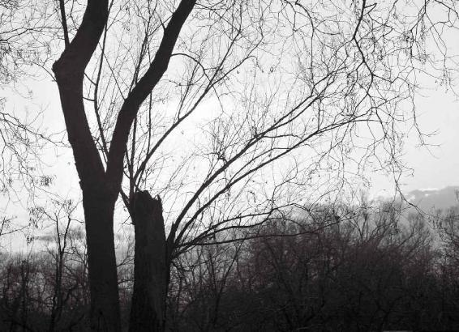
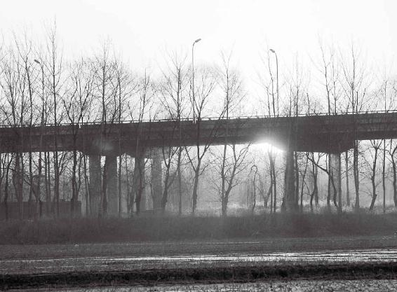
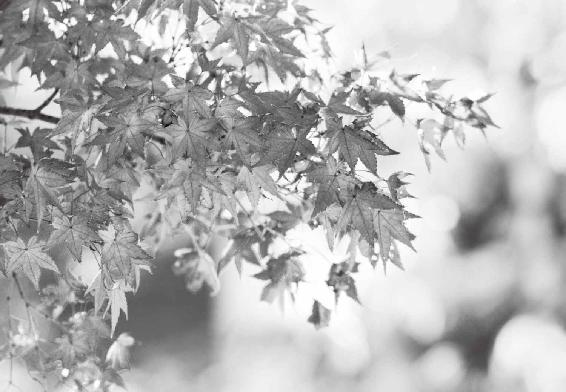
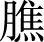
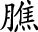
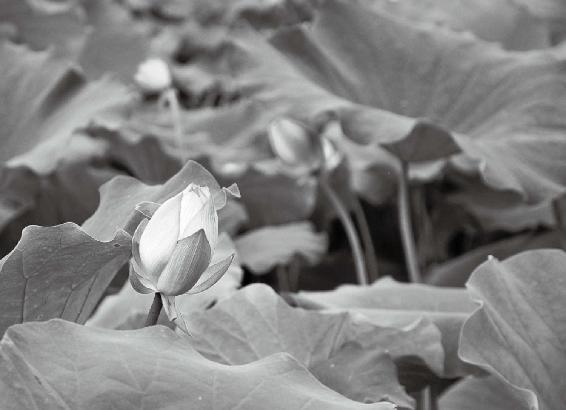
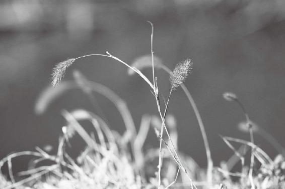

第四章：春夏秋冬风吹多了，人容易得什么病，该怎么养生
春天人为什么容易偏头疼
夏天生病，多在心臟
秋天生病，多在肩背
很多人一到冬天就手脚冰凉，长冻疮
得风湿病的人都是中了风邪
五臟产生的不正常波动或振动
春天风吹多了，人容易鼻塞、流清涕、流鼻血
夏天风吹多了，胸胁最先不舒服
长夏多生里寒洞泄病
秋风吹多了，容易一会儿发烧，一会儿发冷
冬天寒风吹多后，人的常见病是痹和厥
冬天应该少“动手动脚”
仲夏不伤到臟器，长夏就不会拉肚子，秋天就不被邪风感染，冬天不会四肢麻木、厥冷
冬天让身体出汗是愚蠢的行为
经文：
故春气者，病在头。夏气者，病在臟。秋气者，病在肩背。冬气者，病在四肢。故春善病鼽（qiu）衄（nu），仲夏善病胸胁，长夏善病洞泄寒中，秋善病风疟，冬善病痹（bi）厥（jue）。
1.“故春气者，病在头”
春天人为什么容易偏头疼
偏头疼发作前人有几种奇怪表现
徐文兵：春天刮东风，从而鼓舞起人的肝气，过多的肝气会表现在人的颈项上面。如果颈项这道防线被冲破，肝气就会直接冲上头，所以很多人的偏头疼会在春天发作。
偏头疼发作之前，人有一些特别奇怪的表现。
梁冬：是吗？
徐文兵：前面我们谈过，心气内洞的人听觉十分灵敏，能听见很多声音。偏头疼发作之前，人的五官也会变得特别敏感，会有特别奇怪的表现：第一，嗅觉突然变得极其敏感，能够闻到特殊的、奇怪的味道，就连刚拖完的地面上残留的水腥味，他们都能闻到；第二，视觉极其敏感，偏头疼发作之前，这些人必须马上关窗户，因为他们受不了外面正常的光对自己的刺激，一定要把门窗关得严严的，让自己处在黑暗当中。另外，耳朵也开始响。
偏头疼发作之前，人的五官也会变得特别敏感，会有特别奇怪的表现：第一，嗅觉突然变得极其敏感。第二，视觉极其敏感。
梁冬：耳鸣。
徐文兵：对。这些人的感官为什么变得那么敏感呢？
梁冬：心神外越，是吧？
徐文兵：因为肝气冲上来了。如果没有气的鼓舞支撑，他们不会有那么强烈的感觉。
现在人们都说什么三叉神经痛，会从物质上找原因。中医认识得更深，从能量上找原因。
按摩太冲、足临泣穴，可以缓解偏头疼
梁冬：如果把气往下引，头是不是就不疼了？
徐文兵：前面讲过，肝经起于足大拇指。在足大拇指和足第二指的中间，有个穴叫 “太冲”，他是肝经的第三个穴。
什么叫冲？常言讲“怒发冲冠”——肝气大了，会向头上冲。所以要扎这个穴位泄掉多余的肝气。另外，肝和胆互为表里，足少阳胆经在第四五根脚趾中间有个穴位，叫足临泣。扎这儿有点儿疼，会让人掉眼泪，所以叫临泣。人的头上有临泣穴，足上也有个临泣穴，按摩这两个穴位都能够缓解偏头疼。
梁冬：左边的偏头疼和右边的偏头疼有什么不一样？
徐文兵： 左面的偏头疼，偏于瘀血肿；右面的偏头疼，偏于气太旺。中医有句话叫“左血右气”，一边是血，另一边是气。很多人的左半身和右半身感觉都不一样。有些人左半身出汗，右半身不出；有些人左半身发麻，右半身不发麻；甚至有些人觉得自己左半身是男人，右半身是女人。
中医有句话叫“左血右气”，一边是血，另一边是气。
老天爷赋予我们两套系统，都在身体里面，就看你启动了没有。很多人只是启动了一套，比如，一出生就是男人的生理、男人的心理、男人的行为；有些人同时启动了两套；有些人启动了一套不属于自己的、跟自己生理不符的系统。导致一些人生为女儿身却想做男人，另一些人生为男儿身却想做女人，他们的身心是分离的。
老天爷赋予我们两套系统，都在身体里面，就看你启动了没有。
很多病人，他们的内心有两个“我”在打架——一个是后天的“我”，另一个是先天的“我”。他们同时把这两个“我”都启动了，所以很痛苦。这种病是最难调治的。
很多病人，他们的内心有两个“我”在打架——一个是后天的“我”，另一个是先天的“我”。他们同时把这两个“我”都启动了，所以很痛苦。这种病是最难调治的。
梁冬： “左边是男人、右边是女人”，它是怎么体现出来的呢？
徐文兵：这类患者经常感觉到有两个自己在身体里面对话。
梁冬：周伯通。
徐文兵：古代调神的大师能够调治这种病。我调治不了。
如果你的心气或者心意比较弱，容易被洗脑、容易被暗示、容易被灌输，我们就会鼓励你找回自我，唤醒人体自愈或者是自我修复的本能。其实就是找回真我，不要受外面那些事情干扰。
前额疼，要调胃；后脑勺疼，调膀胱和肾
梁冬： “故春气者，病在头”，为什么“病在头”呢？
徐文兵：肝气往上一顶，一是容易出现偏头疼；二是头部前后疼。前额疼，一般跟胃有关，因为足阳明胃经经过这儿；后脑勺疼，跟膀胱和肾有关，主要是膀胱的原因。
肝气往上一顶，一是容易出现偏头疼，二是头部前后疼。前额疼，一般跟胃有关，因为足阳明胃经经过这儿；后脑勺疼，跟膀胱和肾有关，主要是膀胱的原因。
我最近调治了一位病人，你知道他小时候怎么伤害自己吗？他从小参加少体校，时常参加训练，会出大量的汗，然后冰棍、汽水随便吃喝，弄得身体特寒。我大概用了一年时间，才把他身体里边的寒气排完。
他对我说，你知道我那会儿吃冰棍吃到什么状态吗？我说，是不是吃到后脑勺疼？他说，没错，就是冰到那种程度。
患者后脑勺疼，要去调治他的膀胱和肾，用细辛、羌活这些药；患者前额痛，又叫阳明头痛，要去调治他的胃，用白芷、吴茱萸汤。
在春天，人们表现出来的这些头面部症状，和东风起来有关系，和肝气上冲有关系，需要通过调治肝来缓解。
患者后脑勺疼，要去调治他的膀胱和肾，用细辛、羌活这些的药；患者前额痛，又叫阳明头痛，要去调治他的胃，用白芷、吴茱萸汤。
梁冬：有些人不是在春天头疼，而是在夏天、秋天头疼，这是怎么回事？
徐文兵：需要分析一下是不是内风引起的，是不是他们内部的肝气、肝血过旺。《黄帝内经》只说了普遍现象，至于特殊现象，需要我们举一反三，自己去悟。

很多人的内心都在打架。
2.“夏气者，病在臟”
夏天生病，多在心臟
人之所以会中暑，是因为身体内又热又湿
梁冬：“夏气者，病在臟”，臟和腑怎么区分呢？
徐文兵：臟是五臟，腑是六腑，腑属阳，它是对外开放的。你从嘴里探个钩子，能摸到的东西都叫腑。胃、小肠、大肠、膀胱、胆，还有胰腺（胰腺包括在三 里面），这些都属于腑。
里面），这些都属于腑。
在腑和皮之间，内部有个腔子，腔子中间的这套东西，跟外边不接触的，如肝、心、脾、肺、肾，是臟。
梁冬：以前都说臟腑对应，比如，肝胆相照，小肠与心，是吧？
徐文兵：就是说一个在里、一个在外。
梁冬：那五个对应六个，哪个是多出来的呢？
徐文兵：三，三对应心胞。其实没多，都对应着。常言道，铁锅自有锅盖盖，男人自有女人爱，这都是老天爷配好的。
常言道，铁锅自有锅盖盖，男人自有女人爱，这都是老天爷配好的。
梁冬：“夏气者，病在臟”，该作何解释？
徐文兵：夏天，南风带来的热风、热邪容易伤到人的心胞和心，表现在胸胁。肋骨包裹的是我们身体里边最重要的臟器，热气起来以后，不怕伤寒，怕温病。寒气从脚下起，先伤腑，伤太阳膀胱，然后伤少阳经、阳明经，最后入臟；热气则直接入臟。
肋骨包裹的是我们身体里边最重要的臟器，热气起来以后，不怕伤寒，怕温病。
“温邪上受，首先犯肺，逆传心胞”，温病先伤肺，马上到心胞，再往后就伤心了，然后人就会出现神昏、谵语、出血这些症状。
梁冬：中暑，是吧？
徐文兵：人之所以会中暑，是因为身体内又热又湿。
人之所以会中暑，是因为身体内又热又湿。
梁冬：钢铁厂的工人要怎么避免中暑呢？
徐文兵：钢铁厂的工人长期在高温下工作，除了喝酸梅汤、绿豆汤，还要补很多的“钾”和“盐”，因为他们出的汗太多。
“病在臟”，就是指夏天容易出现的那些温病。
梁冬：“猪流感”算是“臟病”吗？
徐文兵：“猪流感”不是“臟病”，是“湿热病”。“湿”加上“热”，它属于“脾胃病”，伤在脾了。
3.“秋气者，病在肩背”
秋天生病，多在肩背
秉风穴调治办公室颈肩综合症特别好
梁冬：“秋气者，病在肩背”，怎么讲？
徐文兵：秋天，西风刮起来以后，那种肃杀之气容易伤到人肩背的阳气。前面说过，肺的俞在肩背，这个“肩背”——肩胛骨把人包裹得很好。
我前面讲了，第二胸椎旁开1.5寸的穴位叫“风门”，“风门”下面叫“肺腧”。我们肩胛骨上有个小横梁叫“肩胛岗”，这里有个穴位，叫“秉风”。“秉”其实是个象形字，手里抓了一把禾苗的意思，很多英文书直接把 “秉风穴”翻译成“grasp the wind”，把风抓住了。这个穴位很有意思，它属于“小肠经”。我常用它调治办公室白领常患的“颈肩综合症”“颈椎病”，以及肩背疼，特别有效。
梁冬：我发现很多女青年都有肩胛、肩背疼的问题。她们夏天也得在肩背上面盖条毯子。
徐文兵：肩背疼的原因，一个是伏案工作，另一个就是乱吹空调。
肩背疼的原因，一个是伏案工作，另一个就是乱吹空调。
梁冬：从头上往下吹。
徐文兵：对，不管是从边上吹还是从底下吹，只要吹，它就是“风”。
在东北待过的人都知道，冬天没有风，没有流动，还伤人不大，但“白毛风”一刮，就是干冷，能把人冻死。现在科学技术越来越发达，发达到能人造“贼风”。大家一定要躲开“风口”，千万不能睡着了还开着电扇或者空调。
现在科学技术越来越发达，发达到能人造“贼风”。大家一定要躲开“风口”，千万不能睡着了还开着电扇或者空调。
人造风、机器风、自然风为什么不一样
徐文兵：我还要提醒大家一下：“风”跟“风”是不一样的，扇子扇的“风”跟电扇的 “风”、空调的 “风”，感觉完全不一样！
“风”跟“风”是不一样的，扇子扇的“风”跟电扇的 “风”、空调的 “风”，感觉完全不一样！
梁冬：有什么不一样呢？
徐文兵：发源地不一样。古代皇帝往那儿一坐，边上有两个宫女执扇。那种风是人造的风，柔和的风。而机器制造的风是生硬、粗暴的，蛮不讲理，直接往你身体里面钻。
梁冬：我发现一个很有意思的现象。很多人买房子，都喜欢在主卧里装一个厕所，厕所里有冷风机，很冷。很多人生病可能跟自家卧室的厕所有关。
徐文兵：对，在被窝里睡得热乎乎的身子突然钻到冷飕飕的厕所里，很容易落病。古代人的床都围一个大帐子，马桶就放在帐子里面，密封性很好，不会受风。
梁冬：如果家里的床足够大，再有个质地很好的帐子围着，会让人觉得很舒服、很有安全感。
徐文兵：端午节我们到延庆的山上去采艾，远离城市后，一到夜晚9点来钟我就困了。
当时，我们点起篝火，烤了烤后背。因为那边离一个湖边水库近，有点湿，烤完背大家就纷纷地表示想回去睡觉。第二天凌晨五6点钟，大家又莫名其妙地醒了，我们就结伴漫山遍野采药去。在那种纯自然的环境下，人就会受自然力量的控制。
在那种纯自然的环境下，人就会受自然力量的控制。
梁冬：有这种情况。
徐文兵：自然界的能量会影响人的精气神，让人到点就想睡觉。可一回到北京，走在灯火阑珊、灯红酒绿的城市里面，人会莫名其妙地变得亢奋，不想睡。老想着谁给来个电话，或者我给谁打个电话，出去喝一杯，吃个宵夜。城市里无形的电磁波和光污染对人的影响太大了。
我们生活在人造的城市当中，被虚伪的、人为的东西干扰，会变得很烦躁。所以我打算将来建一个静电屏蔽床。
我们生活在人造的城市当中，被虚伪的、人为的东西干扰，会变得很烦躁。
我原来在医院工作过，医院有个脑电图室，对电磁波信号特别敏感。大家都知道静电屏蔽，用铜丝金属网一罩，手机放进去收不到信号，收音机拿进去也收不到信号，因为外面的电磁波被屏蔽掉了。我打算建这么一张床。
梁冬：跟鸟巢一样。
徐文兵：床底下也铺一层金属丝，我觉得在里面睡一觉，效果绝对好。
梁冬：很多人睡觉的时候，喜欢把电话放在床头，这个非常非常不好。
徐文兵：伤神。但是很多人的上级要求他们24小时待命。有重要的事叫你，你没到，找你找不着，你就有被炒掉的可能，这也是生活所迫。
梁冬：不容易啊！
把内心调好，外面再热，也不会受影响
徐文兵：对于人造风和机器制造的风，不光是人的生理感觉不一样，心理感觉也不一样。
人造风和机器制造的风，不光是人的生理感觉不一样，心理感觉也不一样。
梁冬：怎么不一样？
徐文兵：许多年前，我有个同学先富起来了，买了房子，装了空调。有一次，我俩聊天，他特感慨。
他说，女人太难琢磨了。我给我们家新装修的房子花了不少钱，安了三部空调（那会儿空调不像现在这么便宜，挺贵的，安一部可能上万元钱）。我老婆连句话都没说，丝毫没有感激之情。有一天停电了，我们俩在屋里待着，很热，然后我就拿起扇子给老婆扇了扇风，结果我老婆感动得差点涕泪交加。
他花钱装空调吹的风凉快不凉快？凉快！爽不爽？爽！但不如手拿扇子扇的风。你说为什么？
梁冬：后面的举动带有情感，不一样。
徐文兵：这个故事对我影响挺大。所以，我劝大家夏天静静地待一待，自己拿个扇子扇一扇，或者给自己身边的人扇一扇，比吹空调要好。
大家夏天静静地待一待，自己拿个扇子扇一扇，或者给自己身边的人扇一扇，比吹空调要好。
梁冬：你说这话，让我想起童年时的大葵扇，感觉很幸福。
徐文兵：我走在路上，看每座大楼的每扇窗户下都挂着一台空调，让我想起一个成语“以邻为壑”，就是发洪水了，我挖个沟把洪水引到旁边邻居家去，害别人。
1984年，我上大学的时候，七个大小伙子一间宿舍，住上下铺，一个屋就十几平方米。当时的北京既没有空调，也没有风扇，我们挺过了一个个夏天。
梁冬：阳气还那么壮。
徐文兵：第一说明我们阳气壮，我们肾的制冷功能好。再一个说明什么？那时候的北京不像现在这么热，不像现在这么燥。
当时，北京的二环路刚修好，三环路还没有贯通，城市里面没有那么多喷着毒雾热气的汽车，很多人家里还没有条件装空调。再看现在，都开发到六环了，到处是私家车，家家都有空调，家家都把家里的热气排到外边，自己闹那么一个凉爽的小环境。
卖那么多空调倒是拉动内需了，但也造成一定程度的浪费。我突然想，如果北京这个城市里，大家都把自己房间里的空调关掉，汽车也不开空调的话，北京依然会像二十年前那样清凉、干净。
如果北京这个城市里，大家都把自己房间里的空调关掉，汽车也不开空调的话，北京依然会像二十年前那样清凉、干净。
但现在的情况已经像脱缰的野马一发而不可收，整个城市在一种病态的道路上越走越远。
梁冬：现在还流行空调下乡。
徐文兵：还要去破坏宁静的农村。
梁冬：其实，有的农村地区真的不需要空调。
徐文兵：我的老家大同，地势比北京高出800〜1000米，相当于北京的一座山，所以大同既干燥又凉快，是一处避暑胜地。我小时候那会儿，别说空调，连电扇都没有。但是现在，浮躁、燥热之风也开始席卷大同了，路上开始堵车了，家家也开始安装空调了。最后空调没准都会安到森林里边去。心浮气躁，人就静不下来，外面天一热，自己也躁，越躁越热，越热越躁。
梁冬：我记得李光耀先生曾经说过，空调可能是人类最伟大的发明。当然，站在一个新加坡人的角度上可能是有道理的。
徐文兵：新加坡的夏天非常热，比较需要空调，但是热的地方有热的道理，人的身体同样也有制冷的功能。
梁冬：对，热的地方才能产生佛陀嘛！有一次，我去印度的鹿野苑，就是释迦牟尼第一次讲经的地方，那儿好多大树！我在树下坐着，突然明白为什么有所谓的“在菩提树下顿悟”。在那个地方，不在树下待着是不可能的，你只能在那儿待着。
热的地方才能产生佛陀嘛！
徐文兵：那儿的温度太高了。
梁冬：对，而且也只能静坐，慢慢地就把全部的心神内敛，用肾精去调节体温。
徐文兵：都说当地人懒散，不守时。没办法，那种炎热状态下人的精气神消耗得很厉害，只能是待着，中国人叫歇晌。歇晌就是当太阳最热、最毒的时候，休息一下。
炎热状态下人的精气神消耗得很厉害，只能是待着，中国人叫歇晌。歇晌就是当太阳最热、最毒的时候，休息一下。
病在臟，这种炎热的气候会影响到人的心境，会把人的心火给撩拨起来。以前看《水浒传》，头一句诗说闹饥荒，“赤日炎炎似火烧，野田稻禾半枯焦”，一副干旱的景象，接着是“农夫内心似汤煮，公子王孙把扇摇”，同样一种炎热气候，对人的影响不一样！种田的农民忧心如焚，担心收成；公子王孙扇子一摇，万事不愁，天就不热了。
我们能做的，就是把内心调好，外面再热，也不会受影响。
4.“冬气者，病在四肢”
很多人一到冬天就手脚冰凉，长冻疮
顾“本”就顾不了“末”
梁冬：前面讲了“秋气病在肩背”，接下来是“冬气病在四肢”。
徐文兵：中医有句话叫：四肢者，诸阳之奔也。意思是说身体有了额外的气血以后，会往四肢走。躯干是本，胳膊、腿是肢体，需要先顾本。冬天，如果伤到了本，人体就会不由自主地把阳气收敛回来，照顾自己躯干的需要，忽略四肢的需要。所以很多人一到冬天就开始手脚冰凉，甚至出现冻疮。冻疮一般都出现在肢体末稍。
冬天，如果伤到了本，人体就会不由自主地把阳气收敛回来，照顾自己躯干的需要，忽略四肢的需要。
梁冬：手指和脚趾那里。
徐文兵：另外，还会冻耳朵。建议大家戴东北人用的护耳，毛绒绒的，像飞行员一样，有很好的保暖作用。
身体顾及躯干的需要以后，会忽略四肢的需要，所以每到冬天“北风吹、寒气重”的时候，人的四肢就容易产生病痛。有些人会出现冻疮，有些人还会出现血栓——“坏疽（j$）”。有些人还会出现四肢麻木，或者是疼痛、麻痹、痛等症状。
冬天，凡是暴露在外的肢体，容易被冻伤，所以要注意保暖。再一个，如果已经出现了问题，要赶紧先治躯干，然后自然有额外的阳气流向肢体及末梢。
人可以无知，但不能无觉
梁冬：但凡手脚疼痛，或者是有其他问题，肯定是气血不足引起的吧？
但凡手脚疼痛，或者是有其他问题。有可能是气血不足，也有可能是气血过亢。
徐文兵：有可能是气血不足，也有可能是气血过亢。比如，有些人手脚发烧发热，有些人则是手心出汗，手脚冰凉。
梁冬：这是怎么回事呢？
徐文兵：阳气蔽住了。我调治过一些病例特有意思。其中有一个是公安局预审科的警察。他说，我审问犯人的时候手总会出汗。我说，犯罪分子应该出汗，怎么是你出汗呢？
梁冬：对啊，坦白从宽嘛。
徐文兵：他说，没办法，我出的汗能把笔录纸浸透，所以，每次都准备一块干毛巾，一边写一边擦。他其实就是受寒以后，阳气蔽住了。你摸他的手，内关往上都是热的，外关以下都是凉的，阳气蔽在这儿了。然后，多余的湿气总是在不停地流，就好像阳气关不住门，人会出现遗尿、大小便失禁一样。所以，我给他扎针、艾灸，把阳气通了以后，他的手热了，也不出汗了。
我还调治过一个厨子，他的整个手都是青紫的。手凉，皮色不变，只是伤到了气；皮色变了，发紫发青，就已经伤到血了。我一握，发现那哥们儿的手冰凉，还出汗。我说，你这是怎么回事？他说，当厨子没办法，你不可能一上来就当大厨吧！得先给别人配菜洗菜。大冬天去洗鱼，最后就落下这么一个病根，手发青。我对他说，你这样的话将来对象都没法搞，想摸摸女朋友的手，一摸，冰凉冰凉，直接给姑娘吓走了。
我给他扎针，“以针引气”，通过扎针把阳气引过来。当针扎下去后，他那青紫的手便开始冒水珠，不是手心出汗，而是手背冒小水珠，然后手就热了，温了。扎了三次，整个皮色就变了。后来，那哥们儿亲自做了顿饭感谢我。
冬天或者是非冬天着凉了，会病在四肢。很多人不注意这种细枝末节的事情，比如，女性来例假的时候或来例假前，把脚放到冰水里，例假就会马上憋回去。
梁冬：很多女生参加高考前故意这样做。
徐文兵：参加游泳课前，用凉水或者温水冲头，例假也会马上憋回去。
梁冬：这样做后患无穷啊！
徐文兵：夏天不管多热，我给人看病的时候，都是穿西服扎领带，脚上穿着一双袜子。我的身体够好，还是个男人，也注重保养。可现在的大姑娘、小媳妇，一到夏天全光着脚穿拖鞋、凉鞋，然后再吃两根冰棍。
梁冬：还有一些阿姨用冷冰冰的水洗东西，她们真的要改掉这个习惯。
徐文兵：绝对要注意。人可以无知，但不能无觉。有一位老先生，快七十岁了还洗冷水浴，最后得了脑梗，这是无觉导致的恶果。他不像邓小平、马寅初那样健康、强壮，人家洗冷水浴，最后洗得通体红热，他则是被麻痹住了。所以大家洗碗、洗手、洗衣服的时候，一定要用温水。
人可以无知，但不能无觉。
冬天病在四肢，最后会伤了肾，因为你直接通过四肢让寒气进入身体了。
冬天病在四肢，最后会伤了肾，因为你直接通过四肢让寒气进入身体了。
梁冬：最后就会伤肾了，对不对？
徐文兵：有些人从此就落下风湿病，然后关节开始变形。最后，再花钱治病。
5.得风湿病的人是被风邪扭曲了
梁冬：得了风湿病，为什么关节会变形呢？
徐文兵：风湿有两种，一种叫风湿，另一种叫类风湿。类风湿跟自身免疫力，以及很多复杂因素，包括心理因素都有关系。风湿则是人体受了风气、湿气或者寒气，出现一种凝滞，或者是麻痹，最后伤到人的筋和骨。有些人长骨刺了，有些人关节变形了，其实都是被邪气扭曲了。
有些人长骨刺了，有些人关节变形了，其实都是被邪气扭曲了。
梁冬：咱们总结一下。“故春气者病在头，夏气者病在臟，秋气者病在肩背，冬气者病在四肢”，当然，徐老师讲过了，不一定是受了外风风邪人才会生病，也有可能是内风的问题。
徐文兵：被热风吹着，或者烤火、做艾灸，都可能会中邪热。很多人做艾灸以后，嗓子肿、疼，眼睛发干，其实那是中了南风，被夏天的风伤着了。
说到“病在四肢”，我们举了几个例子，都是说手。我特别羡慕那些政治家，他们的阳气肯定很足，一天握那么多人的手，那些人里边肯定有一些是病人，手带着病气，握完了以后，受不受影响？
梁冬：捏脚、按摩的服务员其实挺可怜的，他们会接触到更多的病人，肯定也会被病气影响。
徐文兵：我接触过这样的孩子们，挺可怜的， 14岁左右出来打工，然后大概20岁回老家结婚。他们有的做得比较好，老板比较仁慈，工资会比较高，一个月能给家里寄五千到一万元钱，这在农村相当不错了。但他们如果不注意自我保护的话，到最后手脚都会变形的。所以，这些孩子其实是在吃青春饭。
很多按摩科的大夫，或者是中医里搞外科的人，包括帮人按摩的人，如果不会用力，不会用气，不会自我保护，他们的手也会变形。什么腱鞘炎、关节炎，都会有，医生和病人之间其实是互相感染的。所以，我们古人见面不是握手，而是作揖、抱拳问候，别来无恙。干吗不问青红皂白就伸手？
古人见面不是握手，而是作揖、抱拳问候，别来无恙。干吗不问青红皂白就伸手？

人得一种病，其实不单单是身体的病症，有其背后的能量在起作用。
梁冬：有一些男青年还特别喜欢拥抱。以前我有这个恶习，后来发现不行，现在见人一般不拥抱了。
徐文兵：“见人且说三分话，不可全抛一片心”。
病气是会传染的
梁冬：病气是会传染的呀？
徐文兵：病气不是一种物质，但会对人的精神，比如情绪、情感产生影响。
气不是一种物质，但会对人的精神，比如情绪、情感产生影响。
我最早意识到这个问题，是在协和医院中医科毕业实习的时候，当时跟着郭善山老师。郭善山老师是中医科的副主任，我跟他出糖尿病专科门诊。我帮着郭老叫号，抄方子，嘱咐病人怎么吃，怎么弄。一上午下来，就感觉特别不舒服。后来，我就问郭老师，他笑了：“小徐，你也感觉到了吧，这叫病气。”
郭老做医生多年，修炼多年，他有抵御病气的本事。我那会儿刚出道，还很嫩。后来，我慢慢接触病人多了，突然发现，是东风压倒西风，还是西风压倒东风？是医生的能量、气势把病人压倒，还是病人把你干掉？这是一个博弈的过程。
现在，很多病人一进诊室，一进我的“厚朴学堂”或者“御源堂”，就会说：“徐大夫，我本来手挺热，到你这儿手就冰凉。”
我说：“好，你的病我能调治。”
梁冬：气场压得住。
徐文兵：我也见过几个病人，人家一进屋，我的脸就开始发麻。
梁冬：你压不住？
徐文兵：我对他说：“我给您推荐一个更好的大夫吧！”我就不敢治了。做医生做到一定程度，你会本能地感觉到自己能力的局限。
为什么很多做心理咨询的人自杀了？“没有金刚钻，别揽瓷器活。”人得一种病容易吗？你知道人家背后的能量有多大吗？不掂量自己的能力就挺身而出，往上冲，能行吗？
为什么很多做心理咨询的人自杀了？“没有金刚钻，别揽瓷器活。”人得一种病容易吗？你知道人家背后的能量有多大吗？不掂量自己的能力就挺身而出，往上冲，能行吗？
梁冬：总而言之，阿弥陀佛，无量寿佛！
为什么知识分子的末梢循环不好
徐文兵：前面我们讲到了“冬气者，病在四肢……”冬天容易冻手冻脚，容易在手脚上长冻疮。冬天，人的阳气是收敛到身躯内的；这样，四肢肢体的气血就不太足。所以，人得穿一双厚袜子、厚皮靴，戴双棉手套，保护自己的肢端、末梢。
冬天，人的阳气是收敛到身躯内的。这样，四肢肢体的气血就不太足。所以，人得穿一双厚袜子、厚皮靴，戴双棉手套，保护自己的肢端、末梢。
梁冬：反过来看这个问题，是不是四肢的病也跟冬季有关呢？
徐文兵：反过来不能这么推。比如，摩托车有两个轱辘，但是你不能说有两个轱辘的都是摩托车。
当人紧张的时候，心脑强烈需要供血，这时候人的手脚是冰凉的，这跟冬天有关系吗？不见得。
当人紧张的时候，心脑强烈需要供血，这时候人的手脚是冰凉的，这跟冬天有关系吗？不见得。
梁冬：所以有人说，知识分子会得脚气，我估计原因就在这里，是吧？气血到心脑里面去了。
徐文兵：知识分子的心血大部分都去供应心脑，激发灵感了，所以他们的末梢循环就不好。
知识分子的心血大部分都去供应心脑，激发灵感了，所以他们的末梢循环就不好。
6.“经有五风”
五臟产生的不正常波动或振动
梁冬：有什么要复习的吗？
徐文兵：“天有八风，经有五风”，很多人说“经有五风”怎么没有讲？我们一共五套系统，五臟。天有八风，就是东南西北，以及其夹角刮的风，触动了人体的五臟，产生了一种共鸣和共振，使某一臟得到加强，或使某一臟得到了削弱，这时候，它成为了一种“内风”。
五臟产生的不正常的波动，或者是振动，就叫“经有五风”。就好像光里面的成分很复杂，但是经过三棱镜折射以后，就转化成七种颜色——赤、橙、黄、绿、青、兰、紫。不管原来有多少频率、多少振动，经过三棱镜折射，就分成了七种，我们把它称为七色光。
五臟产生的不正常的波动，或者是振动，就叫“经有五风”。
外风引动内风，东南西北以及其夹角刮来这八种风，触动不同的臟以后，会产生不同的内风，但不一定会引起八种内风。有的人手会震颤、眼皮会跳，叫“肝风”，“肝风内洞”。还有的人是“失心疯”，就是突然神智错乱，这叫“心风”。还有“肾风”“脾风”“肺风”。
“中风”“痛风”跟“风”有啥关系
梁冬：有两个问题：第一，传说中的眼皮跳，左眼跳灾、右眼跳财。从中医的角度来看，是怎么一回事呢？
徐文兵：这是睡觉的时候受风了。不是本意、本心想要的抽动，而是外力导致的。
梁冬：受风了之后肯定身体不好，所以出现了这种不由自主的跳动，是吧？
徐文兵：跟有灾、有财没有关系。
梁冬：还有另外一个问题：所谓的痛风和中风，到底“痛”的什么“风”？
徐文兵：“风”是一种致病的因素，是外因，属“六淫”。中医还把体内的一些症状，就是身体表现出来的一种病痛或体征称为“风”。比如荨（qi1n）麻疹，就是人身上突然起一片疙瘩，发痒，过一阵又消了。来无影，去无踪，符合中医给风的定义：“风，善行而数变。”
“肝气窜”或者“肝气痛”也叫“风”。比如，有的人身上疼，但是一会儿这儿疼、一会儿那儿疼，到医院检查又没有病，这种游走不定、浑身疼的症状，我们也叫作“风”。
“风，善行而数变。”身体表现出来的一种病痛或体征称为“风”。游走不定、浑身疼的症状，我们也叫作“风”。还有一些病症跟风关系不大，但是它是约定俗成，也叫作“风”。
还有一些病症跟风关系不大，但它是约定俗成，也叫作“风”。
比如说中风，中风什么意思？半夜睡觉没关好窗户，早晨一起来，嘴歪眼斜，半边脸的肌肉麻痹了，这叫小中风。现在人开车是左侧驾驶，驾驶员的左脸被风吹得比较多，很容易中风。还有一种严重的中风：脑出血和脑梗塞。脑子里面的某个部位血液循环被堵住了，叫脑梗塞。脑出血是血管破裂，出现水肿，把局部的脑组织压迫了。其实就是我们经常说的 “偏瘫”，严重的会要人的命。偏瘫的人经抢救，醒来以后会有后遗症，如果是压了左边的脑组织，右侧身子就动不了；压了右边的脑组织，左边身子就动不了。
脑梗塞和脑出血统称为“中风”。同仁堂有几种药，大活络丹，小金丹等，这些药能治中风，这个“中风”不是指外面的风进来了，把你吹成这样，而是你的脑血管出现了意外。
“痛风”早期也表现为一种游走不定的疼痛。有的人表现是什么？今儿左大拇脚指疼，明天再疼，跑到另外一只脚，或者跑到膝盖，或者跑到手上，游走不定。但是，痛风的发病原因跟风没关系，跟饮食过于阴寒、不化，被吸收到了血液面边有关。所以，痛风是按血液病来调治的。
痛风的发病原因跟风没关系，跟饮食过于阴寒、不化，被吸收到了血液面边有关。
很多人得痛风，由于调治不得当，引发成丹毒。丹毒就是淋巴管炎，腿上的一片出现感染，淋巴结出现肿痛，腹股沟鼠蹊部淋巴结肿大。严重者下一步会出现什么症状？脑血管意外，中风。所以，痛风绝不是“受风着凉的事儿”。
痛风应该怎样调治呢
梁冬：痛风应该怎么调治呢？
徐文兵：一定要把吸入血里面的阴寒的东西化掉。
梁冬：用什么化？
徐文兵：针刺，放血。把阴寒的、污浊的黑血放出去，给邪气以出路。还有就是扶阳派的做法，用大剂量的辛、热药，甚至是有毒的药，慢慢吃、慢慢喝，把体内的血过滤一遍，把阴寒的东西化掉。
痛风最后会导致尿酸高，肌酐和尿素氮水平增高，也就是说痛风患者肾的通透过滤功能出现了问题。然后，很多东西就变成尿酸结晶，沉积在他们的骨膜上，引起剧痛。
梁冬：有人开玩笑说，我坐化以后，身上有那么多结晶体，烧出来都是舍利子。
徐文兵：能烧出舍利来。另外，痛风的 “痛”用得对，因为它是阴寒引起的，不是疼风，而是痛风。
“疼”在外表，“痛”在里面
梁冬：请徐老师详细谈一下，疼和痛到底有什么不一样？
徐文兵：我用英文讲课的时候，说pain、ache，日语叫いたいです， “pain”是疼还是痛？疼和痛有什么区别？
我突然发现自己是认字不识字，查古书、字典，你就会发现中国人有个毛病叫互训，查疼，解释是“疼者，痛也”；赶紧再查这痛，“痛者，疼也”。
梁冬：就像以前很著名的一个笑话：一个人问：“男厕所在哪儿？”
有人回答：“女厕所旁边儿。”
“那，女厕所在哪儿？”
“男厕所旁边儿。”
徐文兵：好多古人也是好读书不求甚解，但是作为一个医生必须得求甚解。当一个患者表述疼和痛的时候，他的感觉是不一样的。
当一个患者表述疼和痛的时候，他的感觉是不一样的。
我们研究汉字的音韵。普通话有四声，粤语有九声，表达更充分。阳性的发音是“一声、二声”，疼是“二声”，往上挑的；痛是什么？“四声”，往下降的。疼描写的是阳性的疼痛。
梁冬：往上浮的。
徐文兵：尖锐的、浅表的、开放的、热性的，这叫疼；痛是阴寒的、内敛的、沉闷的。
尖锐的、浅表的、开放的、热性的，这叫疼；痛是阴寒的、内敛的、沉闷的。
梁冬：在里面的。
徐文兵：所以，我心疼你和我为你感到痛心，意思不一样。
我心疼你和我为你感到痛心，意思不一样。
梁冬：情绪是不一样的。
徐文兵：完全不一样。我们是用而不知。疼里面是“冬”，意思说，碰到这种开放的、阳性的、尖锐的、烧灼感的疼，怎么治？冰镇、冰敷！就止疼了。痛里边是甬道的“甬”，痛者不通，通者不痛，碰到痛者，赶紧把通道给他打开，自然就不痛了。
我们简单举个例子，有人说“我牙疼”，我就问你是牙疼还是牙痛？当牙出现了龋齿，里面有感染，出血或者化脓，人的感觉是痛。当你到牙科，医生拿个牙钻，给你开口，把里边的液体放出来，马上不痛。
但是牙被打开，牙髓牙神经暴露以后，嘶……你吸口冷气儿，一下就变成开放的感觉，开始疼了。不开放，是痛；开放以后，是疼，不一样。
外国人没有分这么细，但他们会用不同的发音表达，你给他一点穴或者一扎针，他“噢唔”一声，往上挑，这是疼；“哎呦”一声，往下降，这是痛。医生认识疼和痛这俩字，临床上就能鉴别出患者症状的阴性和阳性，阳病用阴调治，阴病用阳调治，皆大欢喜。
医生认识疼和痛这俩字，临床上就能鉴别出患者症状的阴性和阳性，阳病用阴调治，阴病用阳调治，皆大欢喜。
吃海鲜的时候别喝冰镇啤酒
徐文兵：关于痛风，我们附带多说一句——善言古者必有验于今。现在大家都懂点医，知道如果有嘌呤代谢障碍的话，平时不要吃猪下水、不要吃内臟、不要吃海鲜、不要吃豆腐、不要喝啤酒，你说对不对？
善言古者必有验于今。
梁冬：这是一个表征吧！
徐文兵：嘌呤其实就是蛋白质代谢产生的一种废物，正常人能把它化掉、燃烧掉、分解掉，尿出去就没有了。不正常的人，就是有痛风的人有代谢障碍，嘌呤就留在血液里面，留在体内。不吃肉，或者不吃海鲜，不吃猪下水，难道你就不产生嘌呤了吗？你也长了一身肉，也有蛋白质，每天都是新陈代谢，代谢出来那些嘌呤怎么办？
梁冬：还是有问题嘛！
徐文兵：你可以不摄入嘌呤，但说你不产生嘌呤不现实，所以主要任务是什么？
梁冬：加强分解。
徐文兵：对，还是加强分解，用催化剂把嘌呤化掉。

有时候你以为对的东西往往是错的。
第一，一定要加强自己小肠的温度。小肠是赤肠，热心肠，它给酶的工作提供一个条件，酶就是催化剂，让那些酶好好工作，把你代谢出来的东西化掉是关键。
但是一定要记住，千万别在吃海鲜的时候喝冰镇啤酒，问问那些痛风的人，基本上都犯过这个错误。
千万别在吃海鲜的时候喝冰镇啤酒，问问那些痛风的人，基本上都犯过这个错误。
第二，要加强胰腺的温度。有人问我：中医里面有没有胰腺这个概念？我说，中医讲的是系统，比如，心包括了很多大脑的功能，三

包括了甲状腺、胰腺和肾上腺的很多功能。梁冬：那三在哪儿呢？
徐文兵：三对应的内在臟腑器官是三个内分泌腺：甲状腺、胰腺和肾上腺，现在很多人得甲状腺功能亢进，就是上的火。
梁冬：甲状腺在哪儿呢？
徐文兵：甲状腺在嗓子、咽喉那儿。有些人甲状腺肿大以后，外表能看出来。甲状腺、胰腺、肾上腺都是内分泌腺，是推动我们身体工作的原动力，也就是中医讲的元气。
《黄帝内经》中说“三者元气之别使也”，三是走元气的地方，一定要让自己的三和小肠热热乎乎的，痛风的病根自然就会被挖掉了。
让自己的三

和小肠热热乎乎的，痛风的病根自然就会被挖掉了。7.“故春善病鼽衄”
春天风吹多了，人容易鼻塞、流清涕、流鼻血
梁冬：“故春善病鼽衄”，鼽衄这两个字实在太难念了。
徐文兵：“冬气者，病在四肢。故春善病鼽衄（qiu nu）”，春天容易得的病是鼽和衄。
这两个字不好认，鼽的意思是鼻塞流清涕，这是一种常见的感冒症状，春天受风或受寒以后，就会鼻塞流涕；衄是鼻子出血。
鼽的意思是鼻塞流清涕，这是一种常见的感冒症状，春天受风或受寒以后，就会鼻塞流涕；衄是鼻子出血。
梁冬：这两个字都是跟鼻子有关，念起来像陕西话或山西话那种感觉。
徐文兵：感冒了，有的人嗓子疼，这一般就是实火或者受了风热；有的人鼻塞流涕，鼻子塞住了，一说话囔囔的，闻不见味，而且流的鼻涕都是清汤寡水，一般都是受风寒了。《黄帝内经》有句话叫，“诸病水液，澄澈清冷，皆属于寒”。
鼻子不通气，就闻一闻葱白水
徐文兵：春天肝气受影响，风邪上受，往脖子、往头上走，先上到鼻子，把阳气闭塞住了。这时候人就会感冒，鼻子很不舒服，鼻塞流涕老吸不上气儿，晚上睡觉还要张着嘴呼吸，怎么办？
梁冬：既然是受寒，是否应该加点热，吃点姜把寒气排出去？
徐文兵：对，用辛温、开窍、解表的药。最简单的方法就是服气，将葱白用开水煮了以后，倒在一个碗里或者杯子里，然后用纸盖住，露一个小孔，汤的蒸汽带着葱香味儿会飘散出来，一闻，鼻子立刻通窍了。“葱辣鼻子蒜辣心”，葱白是味通督脉的药。
“葱辣鼻子蒜辣心”，葱白是味通督脉的药。
《伤寒论》里面有种抢救人的药，叫白通汤。所谓白通汤，就是在通脉四逆汤的基础上加了葱白，葱白有振奋人的元气、通督脉的作用。还有一种通窍方法叫取涕法，卷个纸条往鼻子里捅。这个方法在一定状态下有用，就是当你的阳气快出来但没出来的时候，捅一下，让阳气出来。如果你鼻子那儿根本没有阳气，把鼻子捅烂了也没用。
梁冬：你说葱白通督脉，是吧？那按道理说，天天闻葱白或者葱吃得多的人会长胸毛吧？
徐文兵：长胸毛跟冲脉有关系！督脉在哪儿？
梁冬：督脉在背上，主阳！所以葱是通督脉的，明白了。
徐文兵：通督脉的有几味药，第一种犀角，你看它长在什么地方？
梁冬：它长在犀牛的鼻尖上面，不能不佩服您取类比象的能力。
徐文兵：我记得红叶老师说过，鹿茸也是通督脉的，我跟他有点不同的看法。鹿茸不是长在正中间，而是长在两边。
梁冬：是不是跟膀胱经相通？
徐文兵：动物长犄角是打架用的，为争夺生殖权而打架的，打架是怒发冲冠，所以，用鹿茸补肝血是最好的。为什么鹿茸能调治阳痿呢？
梁冬：肝主宗筋嘛！
世界上每一种东西都有用，五毒也不例外
徐文兵：如果你受了特别严重的阴寒，入到骨髓了，伤到元气、督脉了，比如，强直性脊柱炎，用一般的草木药都没有用，怎么办？用血肉有情之品，用动物药。
动物药里面有个五毒——蝎子、蜈蚣、蟾蜍、壁虎和蛇。动物喷毒液的器官长在什么部位，药效都不一样。只有蝎子用屁股叮人，喷出的毒是督脉上的毒，用这个毒攻人体督脉上的毒有效。蜈蚣是拿牙咬人，牙是肾之余，但是牙没长在中间，跟蝎子毒不一样。
动物药里面有个五毒——蝎子、蜈蚣、蟾蜍、壁虎和蛇。动物喷毒液的器官长在什么部位，药效都不一样。
梁冬：那蜈蚣毒能解什么毒呢？
徐文兵：蜈蚣毒是入肝的，能化解蛇毒，所以蛇药里面百分之百有蜈蚣毒。
梁冬：真的是以毒攻毒了。
徐文兵：用蝎子毒可以调治强直性脊柱炎，督脉的病。关节，就是肌腱出了问题，可以用蜈蚣毒。蜈蚣毒能把中得很深的风剔掉，即使跑到经脉上了，也能一刀一刀给它剔出来。
虎对风的驾驭能力最好
梁冬：以前人们用虎骨祛风，是怎么回事呢？
徐文兵：龙生云，虎生风。虎对风的驾驭能力是最好的。调治偏瘫时，如果患者偏在左半边，我一般都用鹿茸或者是鹿角，因为左边是主升，气血升是属肝的。右边是主降，如果患者右半边偏瘫了，我一般就用虎骨。
龙生云，虎生风。虎对风的驾驭能力是最好的。
梁冬：左青龙右白虎嘛！
徐文兵：如果你到了澳大利亚，就是“左白虎右青龙”。为什么？因为万物负阴而抱阳，冲气以为和。负阴就是背负着阴，阴是北面；抱阳，怀抱着阳，阳是南边；“左青龙右白虎” ，在北半球左边是东，到了南半球，要整个调过来。
流大汗、吐唾沫、流鼻涕、蒸桑拿都会伤肾
徐文兵：“春善病鼽衄”，碰到“鼽”，鼻塞流清涕怎么办？有几种疗法，按揉鼻翼两边的迎香穴，可以通鼻窍；还可以揉鼻根的攒竹穴。鼻根在哪儿？在我们的眉头。
梁冬：两眉之间？
徐文兵：眉头有两个穴，第二个穴叫攒竹穴，它的解剖位置叫额窦。额窦容易积累鼻涕、黏液，是藏污纳垢的地方。人如果受了很多寒气，把迎香和攒竹揉开、揉通以后，鼻子自然就通了。
人如果受了很多寒气，把迎香和攒竹揉开、揉通以后，鼻子自然就通了。
梁冬：有个问题困扰了我三十多年，我小时候擤鼻涕，每次都擤不完，你说这些鼻涕是哪儿来的呢？
徐文兵：鼻涕擤不完说明你肾精很足！人体的体液都归肾臟管，肾藏精主液，这个液指我们的体液、血液、泪液、汗液、唾液，包括精液、阴道分泌液都是肾精所化，鼻涕流不完，说明人的肾精很足。鼻涕、黏液有保护身体的作用，一个作用是滋润；另外就是把一些污浊的东西带出去。把咳嗽带的痰、细菌、病毒，有形的、无形的东西都带出去。但是病人如果一直流鼻涕，就会明显出现一个问题，记忆力下降，因为伤肾了。肾主志，老这么流体液的话，记忆力就会下降。
鼻涕擤不完说明你肾精很足！
如果一直流鼻涕，就会明显出现一个问题，记忆力下降，因为伤肾了。
鼻窦炎患者不仅流鼻涕，而且是浓鼻涕，特别黏稠，黏稠说明液体质量高。举个形象的例子，给你盛碗稀粥，稀汤寡水的，消耗不了多少粮食；给你盛碗稠粥，消耗粮食就多。
梁冬：浓鼻涕对身体伤害大？
徐文兵：对。中医管鼻窦炎叫脑漏，把脑液都流光了！
梁冬：形象生动！
徐文兵：中医对这个认识很深，所以，大家千万别忽视液体的损失。有人说我要出大力、流大汗，其实微微出汗就行了。
在《伤寒论》中，张仲景交代得很清楚，喝完桂枝汤，一定要 “啜热稀粥一升馀”“遍身漐漐微似有汗益佳，不可令如水流漓”。微微发点儿汗就可以了，要是出汗过多，把自己闹得跟水鸡子似的，就会伤肾。现在很多人是出大力、流大汗、吐唾沫、流鼻涕、蒸桑拿，这都是伤肾的诱因。
现在很多人是出大力、流大汗、吐唾沫、流鼻涕、蒸桑拿，这都是伤肾的诱因。
梁冬：小时候，我们喜欢玩吐口水游戏，互相吐。妈妈告诉我，吐口水会伤肾精的。
徐文兵：很多养生的智慧，都深深印在中国人的生活习惯里面，千百年传承下来。
电视剧《雍正王朝》里面有一个细节。雍正没当皇帝之前，康熙老是委派他干一些不好处理的事儿，催缴国库借款，收账，都是不好办的事。雍正很有心计，不当面拒绝康熙的委派，他回家以后先拢了一堆火，自己在那儿烤，就相当于蒸桑拿。出一身汗以后，他弄了一池子冰水，“啪”跳进去，第二天高烧起来了！康熙派御医一看，真得发烧了。康熙还不信，他亲自去看了看，烧得一塌糊涂，只好不给雍正派这个差事。
中国人千百年来是被呵护长大的，体质较弱，如果先热后凉会发高烧，相当于玩命。但是，现在很多人效仿芬兰人去蒸桑拿，先蒸得自己跟个螃蟹一样，然后冲出去跳到冰池子里边。外国人跟咱不一样，他们的体质是耐寒耐热型的。我们中国人不要去那么折腾。
春天流鼻血怎么办？饮白茅根茶
梁冬：前面讲了 “鼽”，还有一个字“衄”。
徐文兵：这个字念nǜ，就是女发四声。衄泛指出血，基本上所有的出血症都叫衄。但放到这儿，我们就把它联系成鼻衄，就是鼻子出血。
鼻子出血是感受到了一种热邪。春天加上风热了以后，人就不是流清鼻涕了，而是出鼻血。这种情况，老百姓都知道怎么办。脑门上拍凉水，脖后根拍凉水，脚心拍凉水。用刺激性比较强的蒜贴在脚心的涌泉穴上，也管用。
鼻子出血是感受到了一种热邪。
但这样做有不好的方面，因为人的热气鼓舞起来以后，它从鼻子里出来，毕竟是个出路，如果把它封死，它会不会再找别的出路呢？所以我们不赞成这种方法。那怎么办呢？第一，不受这种热邪；第二，受了热邪以后，把它化掉，或者降解掉。
调治热邪有一个常用方法，用新鲜的白茅根或者是干燥的白茅根，煮水以后喝。白茅根有非常好的凉血、止血的效果。一般地，我调治一些患者阳气比较足，或者实火比较大、鼻子反复出血的病，就用这种方法，把他们血里边的火泄掉。
调治热邪有一个常用方法，用新鲜的白茅根或者是干燥的白茅根，煮水以后喝。
梁冬：我拿烧红的铁丝把鼻子里的毛细血管烫了之后，就不流鼻血了，你说会不会落下什么病根？
徐文兵：会，因为血会往别的地方冲。
梁冬：往别的地方冲，会不会稠在那儿、堵在那儿？
徐文兵：不见得会堵。如果你把血背后的气，或者说劲泄掉，不让它动你的肝、动你的风，自然就不出血了。
梁冬：我流鼻血最厉害的一次，心里产生了强烈的绝望感，怕自己流血而死。我用各种方法都堵不住，干脆就对着马桶滴，自己数着，滴到六十五滴的时候，就不滴了。那次的事情给我很大震动。
徐文兵：风物长宜，放眼量。
梁冬：什么意思？
徐文兵：别老算小账不算大账，别老计较眼前、不看长远。
别老算小账不算大账，别老计较眼前、不看长远。
切忌让鼻子出血的人仰脖子
梁冬：现在，很多年轻人也经常会鼻子出血。如果急性鼻子出血，来不及在脚底下贴蒜片，该怎么办？掐哪个穴位可以好一点儿？
徐文兵：鼻子出血是督脉的阳气过旺引起的，一般来讲，如果是鼻子急性出血，我们就在脑门上拍凉水。脑门其实也是督脉，还有就是在督脉的几个重要的穴位上扎针。在后背放几滴血，可以拯救鼻孔里的一堆血。
鼻子出血是督脉的阳气过旺引起的，一般来讲，如果是鼻子急性出血，我们就在脑门上拍凉水。
梁冬：把劲儿给泄掉。
徐文兵：我们能看见出血，但看不见推动血的气。还有，切忌让鼻子出血的人仰脖子。因为血如果不流出来，会倒流到嗓子里面，血很快就会凝固，形成血疙瘩，会呛着人的。
切忌让鼻子出血的人仰脖子。因为血如果不流出来，会倒流到嗓子里面，血很快就会凝固，形成血疙瘩，会呛着人的。
梁冬：我那个时候就这样，大口大口吞血，我的想法是，反正都在自己肚子里，不会损失。
徐文兵：三国时期，曹操手下的一员猛将被人一箭射中眼睛，你猜这哥们儿多猛？一下把这支箭连着自己的眼珠子扽出来，一口吞掉，还说了一句话——“父精母血，不可弃也！”
可见道家思想深入人心。
梁冬：绝不浪费！
人体上的“热必退”灵药
徐文兵：人的督脉上有几个穴是泄阳气的，比如大椎穴。
梁冬：在哪儿呢？
徐文兵：颈椎有七节，颈椎和胸椎的结合部是第七颈椎的颈突，就是我们一弯头后脖颈子突起的那一块。颈突下面的穴叫大椎穴。一般来说，调治风热感冒首取的一个穴就是大椎穴。大椎穴扎完以后，会给人一种清凉的感觉。
一般来说，调治风热感冒首取的一个穴就是大椎穴。大椎穴扎完以后，会给人一种清凉的感觉。
梁冬：为什么我的大椎穴有一坨厚厚的脂肪？是不是很多人都有？
徐文兵： 有的人有，有的人没有。大椎穴底下有一层保护层，督脉会比较好、比较旺。调治风寒感冒还有一个穴，就是我们上次讲二十四节气时，对应的夏至的那个穴，位于第七胸椎棘突下，叫至阳穴。至阳阳气最旺。大椎穴和至阳穴是泄督脉邪火、阳气效果最好的穴位。如果一个人流鼻血了，拍脑门不行，喝凉水也不行，最后就用这个方法。
梁冬：有些人不知道怎么扎穴，可不可以拿个勺在背上刮一下痧呢？
徐文兵：可以，我认为刮痧是泄身体或体表邪热的最好方法。
刮痧是泄身体或体表邪热的最好方法。
8.“仲夏善病胸胁”
夏天风吹多了，胸胁最先不舒服
义愤填膺的“膺”在乳头上方
梁冬： “故春善病鼽衄，仲夏善病胸胁”，是吧？
徐文兵：胸胁（xie）。
梁冬：胁是什么意思呢？
徐文兵：前面叫胸，后面叫背，两边叫胁。
梁冬：我一直觉得胁就是肋骨。
徐文兵：胁是由肋骨组成的，但它们两个不一样。胁是指一片，肋是指肋条，比如，我们吃的排骨，一根一根是肋，连成一片叫胁。前面讲过，“南风生于夏，病在心，俞在胸胁”。我们说了“仲夏善病胸胁”，其实就是夏天刮南风伤了心了！体现在胸胁不舒服。
梁冬：有些朋友说“气得我肋骨疼”，说的就是这个吧？
徐文兵：对，肋岔子疼！所有感情问题其实都是动了人的心胞了。有的人说怒伤肝，伤肝之前也得动心，没经过心的同意，它伤不着你。没经过心的同意，它不会影响到你的五臟六腑。
所有感情问题其实都是动了人的心胞。
所以，夏天人会觉得胸闷，老想长出一口气，还有人表现为不停地叹气。中医讲，善太息。你问他到底有什么事，其实没什么过不去的坎，或者难办的事，他就是形成了这么一种习惯，就是在换气。还有人表现为两胁胀痛，不舒服；还有人表现为义愤填膺。
梁冬：膺在哪？
徐文兵：膺在乳头上方，那儿有个穴叫膺窗。生气后本来是两边肋骨疼，这个气要生大发了，就会往上顶，顶到前胸正面，叫义愤填膺。
梁冬：太深刻了，平常讲义愤填膺，都不知道膺在哪儿。
徐文兵：胸膺就在胸的正前方。
要想生病，就去生气、伤心、动情吧
徐文兵：中医作为一种智慧的医学，博大精深，它明显意识到乳腺跟胃有关、跟心胞有关。心胞经的第一个穴位叫天池穴，在乳头外上方一寸，第四、五根肋骨中间。很多人得乳腺增生、乳腺纤维瘤、乳腺癌就是在这个位置。
医学上把乳腺中间的乳头作为一个圆点分成四份，外上方的四分之一叫外上胸腺，下面的叫外下胸腺，还有内上胸腺和内下胸腺。乳腺癌的高发地点就在外上胸腺，就是乳头外上方，而乳头外上方正是心胞经的起点——天池穴。
梁冬：所以，常常义愤填膺的女士要注意了。
徐文兵：义愤填膺、伤心动情、所遇不遂、心情不好，都是乳腺癌的诱因。中医的观点是，伤心的人才得乳腺癌，不伤心的人不得乳腺癌，脸皮厚、心黑的人也不得乳腺癌。脸皮厚对应的生理基础是心胞经强。如果心胞经比较强，自我保护能力比较好，即便受伤了，愈合得也比较快。《厚黑学》研究的就是什么叫脸皮厚。
义愤填膺、伤心动情、所遇不遂、心情不好，都是乳腺癌的诱因。中医的观点是，伤心的人才得乳腺癌，不伤心的人不得乳腺癌，脸皮厚、心黑的人也不得乳腺癌。
梁冬：就是心胞经比较粗，是吧？
徐文兵：心胞经的气血比较粗壮。给你讲一个简单的故事——“唾面自干”。
古代一位官员的儿子中了进士，要外派下去做官。老爷子在送儿子做官之前叮嘱道，儿子，我知道你这个人脾气不好，外派的地方民风又很彪悍，我怕你去那以后出问题。你要记住我的话，一定要忍让克制。儿子说，没事儿，您说的我都懂，他们就是一口唾沫唾到我的脸上，我也不还手，拿袖子擦干就得了。老爷子说，哎呀，这就是我担心你的地方！你干吗要拿袖子擦呢？等风把它吹干不就完了吗？
梁冬：境界的差别。
徐文兵：你唾我，我擦都不擦，等风把它吹干。说明这位老爷子恬的功夫做到家了。
梁冬：还有一个故事，有一个老和尚入定，大家要考验他的定力，就设计了一个情景，说他把庙里的钱偷了。当大家都在诽谤他的时候，他也不申辩，如如不动。最后，诽谤他的人都觉得不好意思了。
徐文兵：其实讲的是一回事儿，都是讲心的境界。这种境界对身体健康有好处，它不会让你的情绪有太大的起伏，不会让你因为别人的无理而伤害到自己的健康。
徐文兵：胸胁保护的是我们最重要的臟器——心、肝、脾、肺、肾。
不想病在胸胁，就不要伤心。想要不伤心，第一，要避开自然界的歪风邪气。第二，要避开人与人之间的风言风语。“风刀霜剑言相逼”，人言可畏，要知道很多人是披着人皮的狼，他们说出的话是很恶毒的，会伤害人的。如果你不注意防备的话，就会被伤到。
不想病在胸胁，就不要伤心。想要不伤心，第一，要避开自然界的歪风邪气。第二，要避开人与人之间的风言风语。
为什么脂肪瘤叫“痰核”
梁冬：“仲夏善病胸胁”，有些人不是痛，而是脂肪瘤长在胸胁上，这说明什么问题？
徐文兵：很多人都有这个问题。曾经有个杂志采访我，摄影师一伸胳膊，疙里疙瘩全是脂肪瘤。他说，徐大夫这有治吗？我说，你治过吗？他说，医生说这是遗传，我爷爷、姑姑都有。我说，那医生怎么给你治的？他说开刀。
梁冬：取掉是吧！
徐文兵：这得开多少刀?千刀万剐，切不完，而且更可怕的是切掉后还会长。中医把这种病叫“痰核”。为什么叫“痰”，不叫“瘀血”？因为它摸上去是光滑的，可移动的。“瘀血”摸上去是坚硬的，沉滞不动的。
有这种病，就要忌口。这病怎么来的？第一是喝冷饮。第二是吃水果，造成人的痰湿，就是让你的体液变得黏稠、不流动。
梁冬：有些人把水果放在刨冰里，然后再去吃。
徐文兵：那天我和患脂肪瘤的记者一块吃饭，我给他点了清炒丝瓜。
梁冬：丝瓜是袪这个的？
徐文兵：丝瓜是专门调治脂肪瘤的，我还建议他泡澡的时候拿丝瓜瓤子搓澡。我还给他点了一个萝卜皮儿，没吃萝卜芯，专吃萝卜皮儿。我对他说，以后这就是你的家常菜，是化痰散结的。橘络也是调治 “痰核”的药，就是吃橘子剥下来的那个白丝，这些是古书上记载的。你知道我是怎么实践出来的？
丝瓜是专门调治脂肪瘤的，我还建议他泡澡的时候拿丝瓜瓤子搓澡。
橘络也是调治 “痰核”的药，就是吃橘子剥下来的那个白丝，这些是古书上记载的。
我给一个70多岁的老先生做保健，每到换季，就给他调理一下身体。他的心臟有点问题，血液黏稠度有点高，还有点脂肪肝，我就给他用化痰散结的药。有一次他来复诊，特惊喜地告诉我，说：徐大夫你不知道吧，我有特大一个毛病被治好了。我说什么毛病？他说我屁股底下长了一个核桃大小的“痰核”，西医说是“脂肪瘤”。原来一坐下去就硌屁股，拿刀切掉它吧，我又不愿意，“父精母血不可弃也”。
梁冬：身体发肤，受之父母。
徐文兵：他接着说，自打我吃完你这个月的药以后，痰核就瘪了，里面本来充满了脂肪或者是黏液，现在变成空壳了。
这是我亲身诊治的一个病例，疗效很好。记住，谁身上有痰核， 第一，要忌口。冷饮别喝了，绿茶别喝了，水果、牛奶也别沾了，这些都是化痰生湿的东西。
第二，常吃点丝瓜和萝卜皮，用丝瓜络、橘络洗澡。
记住，谁身上有痰核， 第一，要忌口。冷饮别喝了，绿茶别喝了，水果、牛奶也别沾了，这些都是化痰生湿的东西。第二，常吃点丝瓜和萝卜皮，用丝瓜络、橘络洗澡。
还有一味药特别好，就是南瓜子。炒熟的南瓜子，嗑去吧！中医曾用南瓜子调治猪囊虫。得了猪囊虫病，身上会长出一个小的包囊，里面是囊虫，中医用南瓜子去消除它。
这几味食疗方比较平和，大家可以试试。
9.“长夏善病洞泄寒中”
长夏多生里寒洞泄病
吃生菜的结果是吃什么拉什么
梁冬：我们继续往下讲“长夏善病洞泄寒中”。
徐文兵：说一下长夏。一年有四季，我们有五臟，脾对应哪个季呢？中医有个说法：脾针对长夏。
梁冬：脾有两个，是吧？关于脾有两种说法。
徐文兵：哪两种说法？
梁冬：有人说，脾对应的是长夏，就是夏天和秋天之间的那一段儿；还有的说，脾对应的是每一个季节中间的十八天。
徐文兵：我倾向于后者。脾是后天之本，一年四季人都离不开脾产生的气血。
脾是后天之本，一年四季人都离不开脾产生的气血。
脾主吸纳，它把胃、肠里消化好的东西统统收进来。很多人吃完东西以后，脾吸收不好，或者是胃、肠消化不好，带皮儿吃西红柿，拉出来的西红柿还带着皮儿；吃的玉米粒儿，拉出来的还是玉米粒儿。
梁冬：对，有些人就是这样！
徐文兵：还有人学外国人，为了保持蔬菜的营养去吃生菜。吃生菜的结果是吃什么拉什么。我建议大家尽量吃炒熟的菜，尽管损失了一些营养，但这样能帮助消化，让你能消它、化它、吸收它。如果生吃进去再生拉出来，就等于穿肠而过，根本吸收不到营养。
还有人学外国人，为了保持蔬菜的营养去吃生菜。吃生菜的结果是吃什么拉什么。
梁冬：对，就是传说中的“穿肠而过”。
徐文兵： 很多人喜欢吃凉菜，中国人称凉菜是“下酒菜”，喝热的烧酒或黄酒的时候，用凉菜来佐酒，平衡酒的热性。有的人不喝酒也去吃凉菜，然后还喝点儿冰镇的饮料，我只能说这些人是既无知又无觉。
有的人不喝酒也去吃凉菜，然后还喝点儿冰镇的饮料，我只能说这些人是既无知又无觉。
梁冬：饮食不当，就会出现“长夏善病洞泄寒中”。
徐文兵：什么叫洞泄？有的人拉肚子时就像捅漏了一个窟窿眼儿，“哗”一下全泄出来了，叫洞泄。有的人拉肚子，每次挤一点儿，那不叫洞泄。
什么叫洞泄？有的人拉肚子时就像捅漏了一个窟窿眼儿，“哗”一下全泄出来了，叫洞泄。
梁冬：对，洞泄就是郭德纲说的“脱肛而出”。
徐文兵：很多人拉到最后，肛门脱垂了，直肠脱垂了，就变成脱肛了。脱肛是中气下泄的症状，有的人表现为胃下垂，还有些人肾下垂。肾本来是被肋骨包着，在第十一根和十二根肋骨与脊柱的交角——肋脊角。如果人的中气不足，对肾的固定、牵引的力量就会削弱，肾就会下垂。
如果人的中气不足，对肾的固定、牵引的力量就会削弱，肾就会下垂。
梁冬：掉到哪儿去了呢？
徐文兵：肾臟就往下移了，不被肋骨包裹了，按一下后背就能触摸到。还有些人表现为子宫脱垂，这也是中气不足造成的。
这些人多有长期的腹泻历史，去做直肠镜、结肠镜可以看到病灶，看到又怎么样？你得了解它背后的能量，是谁让你固定不住，谁让你这么拉？其实就是中气不足。
梁冬：有首歌不要随便唱：“辣（拉）妹子辣（拉），辣（拉）妹子辣（拉）”。洞泄寒中，为什么叫寒中呢？
徐文兵：脾胃叫中，是运化水谷的。寒气如果侵犯体表，你顶多受点儿凉，起个鸡皮疙瘩。但是如果寒气通过饮食直接伤害到你的身体内部，中中了寒以后，表现出来就是洞泄。
梁冬：我跟大家分享一些生活经验。有一段时间我也拉肚子，后来，夏天晚上睡觉的时候，我就拿那种皮的箍箍（挺厚的）缠着肚子，让它护着肚子。后来就不拉肚子了，立竿见影。
徐文兵：冬暖脊背夏暖肚嘛，夏天一定要把肚子盖住、盖严了，不要让它着凉。否则，寒气直接进去以后，就会让你拉肚子。我看到有些病人身体比较弱，有皮无肤，臀部也没有什么太厚的脂肪。健康性感的女人我们叫“丰乳肥臀”。
冬暖脊背夏暖肚，夏天一定要把肚子盖住、盖严了，不要让它着凉。否则，寒气直接进去以后，就会让你拉肚子。
梁冬：对，莫言的小说。
徐文兵：臀部脂肪很少就没有保温的功能，稍微坐一坐塑料椅子、金属椅子，寒气“嗖嗖”就进到身体里，马上就要拉肚子。
寒上加寒的东西一定要少吃
徐文兵：我们平常生活中应该做到：第一，少去吃冰块儿、喝冰水、喝冷饮、吃冰激凌。
第二，大家最好去吃传统的已经定型的饮食，这样的饮食经过千百年的人体试验证明，是符合我们的体质的。比如古人伊尹，他不仅是厨子还是真人，吃进的菜、饭会入人体的哪条经，哪种是温补，哪种是寒性，他都搭配好了。现在很多人就是喜欢瞎发明，搞一些创意菜。
梁冬：有一味菜很可怕——冰镇黄瓜。
徐文兵：冰镇黄瓜还不可怕，我最近看到一种冰镇苦瓜。一般苦瓜都拿红辣椒炒，这样寒热平衡，吃进去后不会马上就闹肚子。然而，我看过一个病人，我说你的胃好像又出问题了。他说他吃了食堂做的菜——苦瓜炒鸡蛋。
梁冬：那真的很寒，鸡蛋本来就寒，再加上苦瓜。
徐文兵：中医有个方子叫黄连阿胶鸡子黄汤，用来调治阴虚火旺、睡不着觉的人，用点儿滋阴的药，让他的虚火平复掉。鸡子黄本身很阴，鸡蛋很阴寒，苦瓜又是苦寒的，这个药给“登高而歌、弃衣而走”那种疯狂、火气特别大的人吃正好。但是给一个正常人吃苦瓜炒鸡蛋，仅次于癞蛤蟆炒鸡蛋——毒药！以前有个治肾病的方子，是民间偏方，叫癞蛤蟆炒鸡蛋。
给一个正常人吃苦瓜炒鸡蛋，仅次于癞蛤蟆炒鸡蛋——毒药！
梁冬：这个很厉害。
徐文兵：蟾蜍有毒，人吃了就会中毒。我去做一个节目，有人告诉我现在流行一个创意菜，牡蛎加臭豆腐。牡蛎很腥，臭豆腐很臭，把俩东西放在一块儿给人吃，还说是创意菜。我说应该把那个厨子拉来，让他先吃一盘儿，吃完了再说。
梁冬：当场口吐白沫。
徐文兵：大家最好要恢复觉，让自己的胃有觉，吃进东西之后知道好不好吃、舒服不舒服，吃完以后不舒服，就不要吃了。
另外，无觉的时候要有知，学点中医的饮食知识，知道寒、热、温、凉怎么搭配，君臣佐使①怎么配。比如说我们吃生牡蛎，加点儿柠檬，祛一下它的腥气；吃生鱼片加点儿紫苏叶，加点儿芥末。
学点中医的饮食知识，知道寒、热、温、凉怎么搭配，君臣佐使怎么配。
梁冬：吃点姜什么的，是吧？
徐文兵：吃螃蟹的时候，泡点儿姜，弄点儿醋，烫点儿酒。《红楼梦》里开螃蟹宴的时候，都是这么个吃法，一般人喝点儿绍兴黄酒，就可以平衡螃蟹的寒性。书中描写，林黛玉吃了一口以后就觉得心口窝疼，她受不了螃蟹的寒。贾宝玉说，给她弄点儿合欢皮的酒。合欢皮泡酒正好就是烧酒，黄酒的温性对林黛玉来说已经不足以平衡螃蟹的寒性，得给她弄点儿烧酒。我们现在则是吃着螃蟹喝着啤酒，两样都是寒的！
很多人都自以为吃得有营养
梁冬：吃鸡蛋时，应该像湖南人一样做剁椒炒鸡蛋，这会比较好一点。
徐文兵：绝对是。有位病人对我说，他的早餐是牛奶煮鸡蛋，一杯牛奶，一个煮鸡蛋。我说，你这么吃进去，舒服吗？他说，吃完以后我嘴里老漾清水，老想吐，但是我妈天天给我这么做。
梁冬：对，我小时候也这么吃。
徐文兵：这么吃化不了。老北京的吃法是什么？吃豆浆和油炸焦圈。豆浆偏寒，所以要吃点儿热性的，弄点儿焦圈或者是油条吃。这正好就平衡了。
豆浆偏寒，所以要吃点儿热性的，弄点儿焦圈或者是油条吃。这正好就平衡了。
为什么很多老北京人对传统饭念念不忘，因为他们吃进去以后感觉舒服，舒服以后我们叫“怡”了，就是吃好了。曹操说“养怡之福可得永年”，吃好了愉悦身心，多好！
我建议大家，如果吃鸡蛋，就一定要吃煎鸡蛋。
梁冬：再撒点那种黑胡椒。
徐文兵：外国人摊煎蛋会放点黑胡椒末，这样吃鸡蛋就会觉得香。什么叫香？就是触动心神了，心神觉得这么吃很好。我们现在都是既无知又无觉，每天自以为吃得有营养，胡乱往肚里塞，塞完了闹出一场病来。
什么叫香？就是触动心神了，心神觉得这么吃很好。
初到外地，不要随便吃当地特产
梁冬：刚才讲到了“长夏善病洞泄寒中”，出现了这个“洞泄寒中”该怎么办呢？
徐文兵：我们经常说一句话叫水土不服。水土不服有两种情况：一种情况是你跑到外地去吃外地的东西，容易出现水土不服。
水土不服有两种情况：一种情况是你跑到外地去吃外地的东西，容易出现水土不服。
为什么呢？一方水土养一方人。你在长期生活的地域里面形成了自己的饮食习惯，突然跑到异地，吃异地出产的东西，里面可能有一种营养成分，比如，蛋白质或者脂肪会让你的身体不适应。不适应的话，就会闹出病来，第一个表现就是上吐下泻，严重的还会发烧。
所以，我们初到离家乡比较远的地方，一定要慎重饮食。不要看当地的特产风味很美味，就张嘴大吃特吃，尝尝就可以了。什么叫尝尝？浅尝辄止，给身体一个适应的过程。尝了以后，如果没出现大的反应，再去多吃。
还有一种情况是现在科技社会发达了，交通便利了，你虽然在本地，但是能吃到全世界、全国各地出产的东西，如果你大吃大喝，照样会水土不服。
还有一种情况是现在科技社会发达了，交通便利了，你虽然在本地，但是能吃到全世界、全国各地出产的东西，如果你大吃大喝，照样会水土不服。
梁冬：北京人有种生活方式叫“吃驻京办”。每个周末去吃一个，能吃一年，除了省会，还有各个城市的，甚至某个大企业的驻京办，那儿的菜都做得很好吃。
徐文兵：浅尝辄止就是给身体提供一个适应的机会和条件，出现不适应了，就要赶紧去解毒。
梁冬：怎么解毒。
徐文兵：要看你吃到什么了。比如，我们生活在内陆，突然吃了很多海鲜。很多人喜欢夏天吃海鲜，天津来的皮皮虾、海蟹、对虾，还有海参、鲍鱼。现在的人吃鲍鱼都是吃身份，你请我吃顿饭，没点五头鲍，而是七头鲍，就感觉你好像有点看不起我。点上鲍鱼后不分青红皂白就吃，其实这种水产的东西都是偏于阴寒凝滞。平时吃的是地上跑的牛羊肉，或者天上的飞禽，突然吃水产品，你就有可能出现两种情况：第一，你没吃多少，但是把它消化了，这时候你就觉得浑身燥热，吃完鲍鱼，吃完虾都有这种反应；第二，你突然吃过量了，就会受寒。
梁冬：你刚才不是说水产是寒的吗？
徐文兵：少吃一点儿，把它消化掉了，它的能量就会被你利用。我们举个例子，深水炸弹没到一定程度，没爆炸前是阴的，可是到了一定程度爆炸了，就变成动力了。
真正养人的是家常饭
徐文兵：一定不要为了面子去吃所谓的好东西，而且吃点儿就得了。真正养人的是家常饭，就像真正能扶持你一辈子的是老婆，绝对不是二奶和情人。
真正养人的是家常饭，就像真正能扶持你一辈子的是老婆，绝对不是二奶和情人。
梁冬：这句话很多朋友要引以为戒啊！
徐文兵：我记得红叶老师讲过胶原蛋白，如果能被你消化利用了，它是胶原蛋白，能紧致皮肤，润泽毛发，或者能渗到骨髓里面，让你健康长寿；如果不被你消化，留在体内就是痰核。
胶原蛋白如果能被你消化利用了，它是胶原蛋白，能紧致皮肤，润泽毛发，或者能渗到骨髓里面，让你健康长寿；如果不被你消化，留在体内就是痰核。
梁冬：所以，像我这种人不应该吃那么多海参。
徐文兵：绝对，把你身上现有的东西化掉就足够用了。
梁冬：对，全是胶原蛋白。哈哈！
穷人乍富才喜欢乱吃——海参的正确吃法
徐文兵：有的人是穷人乍富，就喜欢吃那些好东西。我的病人里面，有天天吃一只海参的，有天天吃一只辽参的——大连的辽参。以前的人吃的干海参是经过发制的。有的时候发制用烧碱，烧碱能够平衡海参的阴寒之气，所以干海参效果挺好。可是现在有条件了，大家都是吃空运过来的新鲜海参，炖上吃。海参本身没味，真正让它入味怎么做呢？
梁冬：做卤的。
徐文兵：鲁菜最著名是什么？葱烧海参，用高汤、浓汤煨、泡，让海参入味，然后用葱白（大葱）烧海参。葱烧海参最有营养的是哪里？
梁冬：就是那个葱吧？
徐文兵：对。真正会吃的人，葱烧海参上来以后去吃葱，土老帽儿才去捡海参吃，让人一看就是没吃过。
真正会吃的人，葱烧海参上来以后去吃葱，土老帽儿才去捡海参吃，让人一看就是没吃过。
梁冬：葱烧海参本质上是一个采阴补阳的过程吧？
徐文兵：这道菜是非常好的阴阳平衡的搭配。海参是腔肠科的动物，没有完全发育好的一种动物，它生存靠的就是一个腔子，平时附着在海底或者岩石上一动不动。海参的蛋白含量很高，但是想把它转化成蛋白或者氨基酸吸收到人体中，这个过程需要的能量很大，所以一定要吃葱烧海参。
现在人吃海参，都是高汤一煨，端上来就吃。一直吃到自己看见海参就想吐，但是因为它有营养，富含高蛋白、胶原蛋白能美容，仍然坚持天天吃，以至于吃坏了身体。
牡蛎肉能鼓舞人的情欲
梁冬：法国人喜欢吃牡蛎，牡蛎可以壮阳动情。据说，拿破仑每次临幸宫女的时候都吃牡蛎，它具有这种功能吗？
牡蛎可以壮阳动情。据说，拿破仑每次临幸宫女的时候都吃牡蛎，它具有这种功能吗？
徐文兵：有。牡蛎是动物界里边很少有的物种，它是阴阳合体，可以根据不同的季节和时间转换性别。所以，牡蛎是阴阳双补的，既能滋阴，又能壮阳。
梁冬：吃它有什么忌讳吗？
徐文兵：中医把牡蛎肉当作一种调治劳损、虚劳虚损的非常好的药。我第一次吃牡蛎是在美国，那儿的人喜欢冰镇牡蛎，将牡蛎放在冰上，然后加柠檬，一吸便可以嗅到牡蛎的腥味。现在近海污染特别严重，重金属沉积、农药污染等，我建议大家千万不要吃生牡蛎。
现在近海污染特别严重，重金属沉积、农药污染等，我建议大家千万不要吃生牡蛎。
你听说过最好的牡蛎吃法吗？
梁冬：牡蛎是传说中的蚝吗？
徐文兵：广东人叫蚝，大连人叫海蛎子。
梁冬：我们在广州的时候吃牡蛎，会拿很多的葱、姜、蒜末，铺在牡蛎上面烤。
徐文兵：没错，炭烧牡蛎是最好的一种吃法。上边就撒上你说的这些东西，很厚的一层。吃完以后，消化吸收特别好，既滋阴又壮阳。
炭烧牡蛎是最好的一种吃法。
梁冬：在广州有家店叫大蚝城，是专门吃蚝的。这家店用葱筒去烧蚝，因为火要猛，炭烧牡蛎会使火更壮一点儿。
徐文兵：如果你特别想滋阴，又不想让阳气发动太厉害，就可以做牡蛎煎。牡蛎煎就是用牡蛎和鸡蛋一块儿摊成饼，但是里边还得放点儿姜末，不然会太阴寒，人吸收不了。这种吃法对一些患有干燥综合症的人效果特别好，尤其是对那些没有唾液、没有泪液、鼻腔黏膜没有液、阴道没有分泌液的人。
梁冬：补肾，是吧？
徐文兵：牡蛎是血肉有情之品，可以直接滋补肾阴。而且更好的是牡蛎的壳。
牡蛎是血肉有情之品，可以直接滋补肾阴。而且更好的是牡蛎的壳。
梁冬：壳可以磨成粉，是吧？
徐文兵：不用磨成粉，把它敲成碎块儿可以入中药。中医开方子，经常开一个生牡蛎。别以为这是让你去吃蚝，是用牡蛎壳入药。牡蛎壳有非常好的滋阴潜阳的作用，可以调治高血压。
如果一个人虚阳上浮，就是阳气往上顶，下面没根的情况，我们就用牡蛎壳和生龙骨一块儿用。牡蛎肉能鼓舞人的情欲，是血肉有情之品，牡蛎壳相反，它能让你收敛、安静。我用牡蛎壳调治过一些遗精的病人。
牡蛎肉能鼓舞人的情欲，是血肉有情之品，牡蛎壳相反，它能让你收敛、安静。
梁冬：阳气老是上浮，收不住。
人体越虚，性欲越强：不要当“失精家”
徐文兵：人体越虚，性欲越强，然后越遗精。《伤寒论》里专门论述了这种病，“夫失精家，少腹弦急”，里面称呼这种患者为“失精家”。
梁冬：什么叫“失精家”？
徐文兵：能做到家的人，都是很长期、很频繁地做一件事儿的，比如作家。失精家就是长期流失自己宝贵精血的那些人。他们表现的症状有以下几个：“少腹弦急”，你摸下他们的小肚子，绷得特別紧。为什么绷得特別紧？因为他们老处于一种发力状态，射精、遗精都需要发力；“阴头寒”， 就是他们觉得自己的阴茎是凉的。如果是女性，她也觉得自己的生殖器是凉的；“目眩发落”，他们的眼睛是花的，玻璃体混浊，患有飞蚊症，看什么都好像有一只小黑虫在飞，看什么都眼前发黑；“发落”，大把大把掉头发。
失精家就是长期流失自己宝贵精血的那些人。
“阴头寒”， 就是他们觉得自己的阴茎是凉的。如果是女性，她也觉得自己的生殖器是凉的。
《伤寒论》说了，这些人都是 “男子失精，女子梦交”。男子有遗精、滑精的毛病，女子有“梦与鬼交”的现象，就是一做梦，来了个帅哥，两人云雨一番，醒来一看，底下湿了，白带出了很多。这种情况该怎么调治？用桂枝加龙骨牡蛎汤。
梁冬：龙骨是什么骨？
徐文兵：龙骨是史前动物的化石。
梁冬：现在还有吗，哪来那么多的龙骨呢？
徐文兵：咱们国家地大物博，有很多化石。龙骨有一种重镇、安神、潜阳的效果，让人把虚火和敷在表面的阳收回来。
龙骨有一种重镇、安神、潜阳的效果，让人把虚火和敷在表面的阳收回来。
梁冬：是不是传说中的“潜龙勿用”？我看过火神派郑钦安的一篇文章，他用《易经》的思路去用药，其中很重要的一点叫“潜龙勿用”。就是说，大部分人会觉得自己脸上暗疮多或者面焦，诸如此类，不是別的原因，是火上去没下来。
徐文兵：中医叫“暗疮”，西医认为是个性激素的问题。这种暗疮，学名叫“痤疮”，老百姓给它起了个俗名叫“骚疙瘩”，就是性冲动带起来的火没压住、没敛住，其实这种性的冲动就是肾火。龙雷之火起来了，就要潜阳，把它潜下去留着慢慢用，这时候就会用到牡蛎壳。
梁冬：打一个比喻，现在我们把太多的石油开采出来，导致地球表面变暖，同时地底下能量掏空了，又出现了地震、海啸。
当你学会运用精气神，可以得到更高的快感
徐文兵：人的精气神就靠“精”。你知道西门庆和武松谁的武功更高吗？
梁冬：可能西门庆更高吧！
徐文兵：《水浒传》中描写西门庆的武功更高，但是打架的时候，却被武松给收拾了。《水浒传》总结出一句话来，说“西门庆被酒色掏空了身子”。而武松是 “相貌堂堂真男子，未亲女色少年郎”。武松的精留着没用，等着打架呢。
西门庆的武功更高，但是打架的时候，却被武松给收拾了。《水浒传》总结出一句话来，说“西门庆被酒色掏空了身子”。而武松是 “相貌堂堂真男子，未亲女色少年郎”。武松的精留着没用，等着打架呢。
梁冬：武松之所以打架打得好，主要就是平常不用“精”。
徐文兵：没滥用、不滥用。梁山好汉基本上都是没有女人缘的，说明这些好汉们的精气神没用到女人身上，都去练武功了。一方面失了，另一方面得了。
梁冬：会不会有另外一种可能呢？就是说，当你学会运用精气神的时候，可以得到更高的快感，对男女之事就没感觉了。
徐文兵：那些梁山好汉称兄道弟，成就一番事业。他们关注的是这方面，那些鸡零狗碎的事，他们不太在乎。
梁冬：前段时间我碰到一个大和尚，年纪与我相仿，应该身体也不错。我私下问了他一个问题。我说咱们差不多是同龄人，你怎么解决生理需要呢？大和尚说，当年收他的师父有一百多岁，他也问过师父这个问题。师父传给他一种静坐的方法，这种方法能够natural high——自然而然地达到 “化精成气”的境界。
徐文兵：炼精化气，炼气化神。
梁冬：他说这样静坐之后，自己就达到了一种精神上的高度愉悦。那个时候就觉得男女之事情太低级趣味！真有这样的吗？
徐文兵：这个大和尚已经把不传之秘告诉你了。对一般人他不会说，而且说了一般人也不信。因为世人没有尝过静坐的滋味，就觉得能做男女之事就不错了。还有人觉得饮食男女的事也没劲儿了，开始追求高层享受。怎么办？吸毒！吸完毒以后，他们觉得找到了高层次的享受。但是他们不明白，吸毒是提前透支燃烧人的精髓，精髓烧空以后人就完蛋了，所以吸毒是违反自然的。
吸毒是提前透支燃烧人的精髓，精髓烧空以后人就完蛋了，所以吸毒是违反自然的。
梁冬：吃过重度马屁的人，一般的吹捧他会觉得不过瘾，觉得没啥意思。
徐文兵：对，没啥意思。
拉肚子千万不要吃错药
梁冬：前面说到“长夏善病洞泄寒中”。
徐文兵：我们出现了“洞泄寒中”以后怎么办？一定要把寒气赶走，这叫祛邪。另外，敌人赶走以后一定要补中益气。千万不要将程序搞乱了，如果先去补中益气，把漏洞止住，有可能把寒气留在肚子里，这叫“闭门留寇”，将来就是隐患。
梁冬：会腹泻！
徐文兵：腹泻是一种。还有很多人的肚子里会长出一个个硬块儿。
祛寒气有外敷和内服两种方法。外敷的方法是，当出现“洞泄寒中”的症状后，不要马上去吃止泻的药。
现在广告上说：吃一片药就不拉肚子了。这样做是强制不拉肚子，那些该拉的东西出不去，就会在体内乱窜。所以我建议：绝对不能滥用抗菌素或者止泻的药去止泻。现在医学治疗腹泻，不分青红皂白，马上就用抗菌素。结果，肠道里边很多有益菌也被杀掉了，导致更为严重的细菌感染，甚至是霉菌感染。
现在广告上说：吃一片药就不拉肚子了。这样做是强制不拉肚子，那些该拉的东西出不去，就会在体内乱窜。
现在“世界卫生组织”也强烈建议医生不要用抗菌素治疗腹泻，而是用补液，给患者泡上糖盐水，以免把体液拉没了。然后，喝点热水，包括盐含量0.9%的糖盐水，利用自己身体的自愈功能去恢复。
当然中医的认识更高一层，有办法帮人把身体里面的寒赶走。怎么赶?
梁冬：用什么方法？
徐文兵：有两种办法。第一，把葱白切成段以后，放在铁锅或炒锅里炒，炒出香味了，葱也变得有点焦黄，拿纱布一包，放在肚脐上。肚脐叫神阙，天然有个门可以放气进去。
有人说，我的肠黏膜都给拉出来了，其实那叫寒痰黏液，是寒气凝聚而成的。有的人说，我拉出像鼻涕一样的东西，还放出了很多臭屁，恭喜你，寒气出来了。这时候，你再补中益气，喝点糖盐水，或者喝点小米粥，吃点咸菜。小米粥是甜的，咸菜是盐，比糖盐水还更高一级。
有的人说，我拉出像鼻涕一样的东西，还放出了很多臭屁，恭喜你，寒气出来了。
在这种情况下，你可以再用点 “补中益气丸”，里面有黄芪、党参、白术、茯苓这些药，能补补气。补完气以后，你会发自内心地感觉自己的食欲恢复了。
还有一种方法：将腌咸菜的那种块儿盐（英文叫 rock salt）放到锅里炒热，然后放在肚脐上。它虽没有通窍开窍的作用，但人、哺乳动物都是从海洋里进化出来的，盐的热辐射跟人体的气的频率是接近的。盐块儿炒完后热渗透力比较强，你把它放在肚子上，它的热气能把你肠胃里的寒气逼出去。
梁冬：去那些按脚的地方，他们会给你一些热的东西，拿微波炉热的，很可怕吧？
徐文兵：我觉得微波炉的热有点奸，给人一种奸诈不舒服的感觉，不敦敏。最好是用炭火铁锅炒一炒。
我觉得微波炉的热有点奸，给人一种奸诈不舒服的感觉，不敦敏。
梁冬：那种地方的微波炉是反复使用的，一个人用完之后，再热一下，然后给下一个人用，这样会不会传染？
徐文兵：气氛是可以感染的。
腹泻就按上面我讲的两种方法去做就可以，这是外用的方法。很多人说，我泡泡脚行不行？我觉得这有点远水不解近渴。治病应该求本，泡脚求的是末。没有大灾大病，平常保保健可以，如果生病了想从脚上去调治，就有点儿隔靴搔痒，有点不给劲。
梁冬：还有个方法，比如说做艾灸，这行吗?
徐文兵：艾灸有点补的作用。真正可以祛邪的方法是针刺。
有个患者来看病，他为什么生病？当时是春天，他早早地就跑到颐和园踏青，结果回来肚子剧疼。我一看，他的小鱼际铁青，是小肠受寒了。我就给他扎了针，扎得他出了一身冷汗！
这种情况不适合做艾灸，艾灸有一种温补封固的作用，不适合祛邪。调治这种病，就要用我前面说的葱白、炒盐粒，或者找个大夫去扎针，出一身冷汗就好了。
我扎针的时候，眼看着那些人的皮肤上出汗珠，摸上去都是冰冷的，都是寒气。这是“外治法”，而“内治法”在《伤寒论》里面也有详细的论述。
《伤寒论》就是讨论寒气从足太阳膀胱经进来以后，经过阳明、少阳，然后到太阴、少阴，最后到厥阴的过程，所以它里面有很多方子都是调治“洞泄寒中”的。最有名的一个方子叫“理中汤”，或者叫“理中丸”。
《伤寒论》就是讨论寒气从足太阳膀胱经进来以后，经过阳明、少阳，然后到太阴、少阴，最后到厥阴的过程，所以里面有很多方子都是调治“洞泄寒中”的。
“理中丸”里面有四味药：党参、炙甘草、干姜（干姜有一种辛热，它比生姜的力量要强大）、白术。这些都是温热的药。如果你觉得肚子特别疼，吃进东西不消化、拉肚子，就用“理中汤”“理中丸”。
如果患者吃完以后仍然止不住疼，可以用另一个方子，叫“大建中汤”。中医里有“小建中汤”，也有“大建中汤”。如果是一般的疼，就用“小建中汤”。
“小建中汤”是根据哪个方子化成的呢？“桂枝汤”，里面用的是“肉桂”。如果“小建中汤”不管用，再用“大建中汤”。“大建中汤”里面有“蜀椒”，就是四川出的 “花椒”，因为一般的花椒在这里都不管用。我们知道四川饭的特点是什么？
梁冬：辣！
徐文兵：对，麻辣。所以，用蜀椒可以祛一般的肉桂、干姜都祛不了的 “阴寒”。有种人剧烈腹痛，然后拉肚子，一般的药都不管用，就用“大建中汤”。如果还止不住，可用“桃花汤”，这个汤用的是一种矿物药，赤石脂、禹馀粮，这个就比较深了。
《伤寒论》里有明确的记载，如果到最后患者拉得手脚都冰凉，都快脱阳了，就用“四逆汤”。“四逆汤”里面有三味药：附子、干姜、灸甘草。
如果还不行，那就用 “通脉四逆汤”，就是用大附子，加倍用附子和干姜的量；再不行，加“葱白”，再不行，加“吴茱萸”。
“吴茱萸”又叫 “越椒”，就是浙江一带出产的花椒。中国古代人把这些药物都研究透了。
梁冬：同样一个药材，不同地方出就不一样。蜀椒、越椒是不一样的。
同样一个药材，不同地方出就不一样。
藿香正气水有什么功德
徐文兵：水土不服,长夏暑湿比较重的时候，我建议大家一定要把藿香正气水，还有其他一些解暑的药，比如十滴水、仁丹等作为常备的药随身携带。
水土不服,长夏暑湿比较重的时候，我建议大家一定要把藿香正气水、十滴水、仁丹等作为常备的药随身携带。
如果出现这种吐泄的症状了，就赶紧打开喝一瓶儿。藿香正气水里面的主药有：藿香、白芷、苍术、紫苏叶，是根据“平胃散”发展过来的。最关键的是，藿香正气水里的水其实是酒。
梁冬：藿香正气水有股很难闻的味道，是吧？
徐文兵：特难闻的味儿。如果没有酒来做药引子的话，肯定不行。现在出产了藿香正气片、藿香正气软胶囊，都是新剂型。药最根本的东西是疗效。如果剂型改得很可口、很好吃、很简单、很容易服，但是没有疗效，也是没有用的。
在这种状态下，喝藿香正气水效果是最好的。我们平常喝藿香正气水觉得特难喝，但当你中了寒，拉肚子，伴有呕吐的时候，喝藿香正气水时感觉它是香的。
梁冬：因为身体自有大药，本能地知道自己需要什么东西，是吧？
身体自有大药，本能地知道自己需要什么东西。
徐文兵：没错儿。动物为什么知道药？
梁冬：它就觉得这个东西对自己好。
徐文兵：在病的状态下，闻着平常特难闻的植物，它会觉得是香的，然后它就去吃。
“我们要相信那些接近自然的人为的东西”
梁冬：人体或者生命的这种现象太奇妙了！为什么要相信一见钟情呢？我觉得肯定是你的灵魂深处需要那样的一个人，长成那样的，性格那样的，你一眼就能认出来。
为什么要相信一见钟情呢？我觉得肯定是你的灵魂深处需要那样的一个人，长成那样的，性格那样的，你一眼就能认出来。
徐文兵：没错儿。这就是我们说，你是相信自然呢，还是相信人为呢？
梁冬：人为就“伪”了。
徐文兵：我们要相信那些接近自然的人为的东西，这就更理性一点。千万别把自然的东西贬得一无是处，老相信一些人为研究出来的东西。很多人为研究出来的东西，连狗都不如。
我们要相信那些接近自然的人为的东西，这就更理性一点。千万别把自然的东西贬得一无是处，老相信一些人为研究出来的东西。很多人为研究出来的东西，连狗都不如。
梁冬：你的学堂里面有个狗的模型，还有狗的经络是吧？
徐文兵：狗有足三里，也有阴陵泉、阳陵泉。
梁冬：你以前说过，有一些古代的人甚至知道树的经络在哪儿，可以给树扎针灸。
徐文兵：古代人对自然是非常尊崇的, 把树叫鬼神村。我的形意拳老师马老师跟我说，树长三年以上都有灵性，古代人砍树会提前三天跟树打招呼，比如说我要盖房了，需要你，不好意思！古人很尊重自然界的生灵。不像现在人说砍树马上就砍了，这是一种愚昧无知的表现。
梁冬：无礼。
不懂吃的话相当于慢性自杀
徐文兵：大家吃生鱼片的时候一定记住多蘸点儿芥末。芥末是调治痛风非常好的一味药。老北京人喜欢吃芥末墩儿，中国的芥末叫黄芥末，日式生鱼片用的芥末是绿芥末。
梁冬：我看这个芥末好像是姜磨出来的，对不对？
徐文兵：是山葵，我去日本专门买了山葵，这个东西最能清洁人的机体内部。你知道我们身体负责清洁的清道夫是哪个器官吗？是胰腺。
你知道我们身体负责清洁的清道夫是哪个器官吗？是胰腺。
古代没有香皂、肥皂的时候，我们怎么洗手？
梁冬：用胰子。
徐文兵：很多人知道这个字儿，但不知道啥意思。胰子就是猪的胰腺，胰腺的功能是分泌消化酶、淀粉酶、脂肪酶、蛋白酶分解脂肪、化油腻，清理这些不干净的东西。古代人用猪胰子洗手。所以，现在有些人还管香皂、肥皂叫胰子。
胰腺的功能是分泌消化酶、淀粉酶、脂肪酶、蛋白酶分解脂肪、化油腻，清理这些不干净的东西。
山葵长在很洁净的地方，本身很辛辣刺激，能唤醒人的胰腺功能。无论是预防或者调治糖尿病、调治血脂过高、过于肥胖，还有痛风，这种山葵磨的芥末必不可少。
梁冬：我们看见芥末的时候，它是装在管子里的，用的时候像牙膏一样挤出来。
徐文兵：其实它是种绿色的植物，就像小竹笋一样。我拿回来就磨，磨成碎末，就跟我们磨姜末一样，非常香、非常辣，然后鼻涕眼泪全出来。鼻涕眼泪出来后会振奋人的阳气。
鼻涕眼泪出来后会振奋人的阳气。
中医用的是黄芥末，黄芥末结的籽叫白芥子，也是味中药。古代药书上记载，白芥子专治皮里膜外的痰（西医叫脂肪瘤）。
梁冬：黄芥末是什么？
徐文兵：黄芥末是一个品种，日本的绿芥末叫山葵。
梁冬：黄芥末长什么样子呢？
徐文兵：长成什么样不知道，但那个白芥子是我们中药铺里有的，专门调治阴寒的痰。
吃日式生鱼片的时候，一定要放芥末，生鱼片底下有个绿色的叶子叫紫苏，紫苏是解鱼蟹毒的。还有一个红色的拿醋泡的姜，日本人叫咖喱，其实就是姜。日本生鱼片还配白丝，叫大根丝，其实就是白萝卜丝。这四味作料与不好消化的生鱼片搭配在一起吃，perfect，完美！
梁冬：日本人好像不仅拿鱼来做刺身，鸡身、鸡肉也能做成刺身。
徐文兵：那就是胡搞，乱配果子干了。真正吃生鱼片，叫吃脍，“食不厌精，脍不厌细”的那个“脍”。中国人最早吃的是“飞刀脍鲤”，吃的是鲤鱼片儿。也吃鲈鱼，“休说鲈鱼堪脍”，鲈鱼也非常好吃。
我们吃三文鱼、金枪鱼，还有些贝类等阴寒不好化的海产品，一定要加些辛温的东西，或者索性带瓶藿香正气水，一边儿吃，一边儿喝。
我们吃三文鱼、金枪鱼，还有些贝类等阴寒不好化的海产品，一定要加些辛温的东西，或者索性带瓶藿香正气水，一边儿吃，一边儿喝。
吃海产品的时候，切忌吃水果。水果里面有一种鞣酸，和海产品里的蛋白质会凝结成一个团，更不好消化。吃海产品的时候吃水果，一看，蠢货！吃海产品的时候喝绿茶，更蠢！
梁冬：那只能喝炒的那种茶。
徐文兵：要喝茶只能喝大麦茶，或者直接烫壶清酒，烫壶黄酒，还可以烫壶烧酒，二锅头之类的，好吃、好消、好化。
梁冬：不懂吃的话相当于慢性自杀。
不懂吃的话相当于慢性自杀。
疾病面前人人平等
徐文兵：前边，我们讲了“医生的气和病人的气”谁压倒谁？
“医生的气和病人的气”谁压倒谁？
梁冬：不是东风压倒西风，就是西风压倒东风。
徐文兵：有的朋友说，你说的是不是有点儿太玄了？其实大家可以看一下历史上的一些名医的传记。
汉朝有个名医叫郭玉，在史书上有他的传记。郭玉是一个医术非常高明的大夫，但是当时的皇上发现一个问题，郭玉给普通老百姓看病效果特别好，可是给一些达官贵人、王公贵族看病时，效果就差强人意。后来还发现一个更有趣儿的事情，汉朝的服装是分等级的，不同身份的人穿衣服的颜色、质量都不一样，当王公贵族穿上普通老百姓的衣服来找郭玉看病，疗效又变好了。皇帝就问郭玉，这是怎么回事儿？郭玉回答得非常精彩：“医者意也。”
这句话可以这样理解：现在的医生是用自己的理性思维去看病的，那古代的巫靠什么看病？
梁冬：意念。
徐文兵：巫不是意念，巫的层次要高。巫者神也，巫是用先天赋予的神灵的本能去感知一些东西。医生比巫的层次要低一级。“医者意也”就是说后天的意识会受到很多东西的干扰和影响。比如说，一个官员来看病，如果他傲慢无礼——不是说他故意傲慢，而是多年形成的官架子或者那股劲儿，他不由自主地带到医生这儿，位置摆的比医生还高，你让医生怎么弄？
所以，现在很多比较重要的人物看病，比如说做手术，都只露出做手术那个部位，但不露脸。他们就怕医生一看，哎呦，我给这个人看病，一下子拿手术刀的手就开始哆嗦。如果医生的意受到别人的气场、言语或者是其他一些行为左右的话，心就不静，在这种情况下看病容易出问题。
如果医生的意受到别人的气场、言语或者是其他一些行为左右的话，心就不静，在这种情况下看病容易出问题。
为什么“医不自治”
徐文兵：还有一句话叫：“医不自治。”为什么呢？医生给他自己或家人看病，效果就不好。因为那会儿心是乱的，不冷静，情绪很难保持理性。
叶天士讲过一个故事，他的老母亲发高烧，他很为难。他给别人看这病很简单，用生石膏30克、60克，就可以了。但面对自己的母亲，他就不敢用了。他觉得生石膏太凉，哆里哆嗦地用10克、15克，结果烧退不下去。最后，叶天士没办法，就把他的一个对手叫薛雪的人（文人相轻，医生互相也打架）请来。
薛雪医术也非常高，但是理念上跟叶天士有点相左，于是就给自己的医馆起名号叫“扫叶山庄”。
梁冬：哈哈！文人也很可爱！
徐文兵：薛雪一来，直接开了生石膏60克，老太太一吃，烧退了。所以，给自己亲人看病的时候，医生的“意”就容易乱，“医不自治”的说法就是这么来的。
孙思邈的《千金药方》里提到 “大医精诚”，“凡大医治病，必当先安神定志，无欲无求”。这种情况下治病，效果肯定好。这是大医，我们顶多做个小医生，或者做个“中医”就不错了，因此有些病人我们治不了，有些病人则能治。
“凡大医治病，必当先安神定志，无欲无求。”
①原指君主、臣僚、僚佐、使者四种人分别起着不同的作用，后指中药处方中的各味药的不同作用。
10.“秋善病风疟”
秋风吹多了，容易一会儿发烧，一会儿发冷
梁冬： “秋善病风疟”，疟疾的“疟”，对不对？
徐文兵：对。秋天西风吹，西风带有肃杀之气。如果你不及时地收敛自己的神气，不闭合自己的腠理和毛汗孔，容易受到肃杀的西风侵害。然后，一个是受风，再一个是疟，疟是什么意思？
秋天西风吹，西风带有肃杀之气。如果你不及时地收敛自己的神气，不闭合自己的腠理和毛汗孔，容易受到肃杀的西风侵害。
梁冬：拉肚子吗？
徐文兵：什么叫疟疾？
梁冬：疟疾不是打摆子、拉肚子吗？
徐文兵：打摆子，跟拉肚子关系不大，患疟疾的人一会儿发烧，烧到很高，一会儿发冷，冷到打摆子，中医称之为“往来寒热”。
梁冬：西医是怎么形容这种病的？
徐文兵：现代医学发现疟疾不是细菌，也不是病毒，而是一种微生物，叫疟原虫。疟原虫侵袭到人的体内以后，会造成疟疾，甚至形成一种恶性疟疾。比如说，很多人初到非洲不适合那儿的环境，会得一种恶性疟疾，甚至要命。
现代医学发现疟疾不是细菌，也不是病毒，而是一种微生物，叫疟原虫。
梁冬：我一直认为疟疾指的是拉肚子。
徐文兵：不对，那叫霍乱。疟疾为什么会出现这种忽冷忽热的症状呢？患者体内是一种正邪交替的状态，当正气鼓舞起来的时候，就会发烧，当正气消耗完以后，就会发冷。中医讲，这种病是属于处在半表和半里中间的一种状态。
用中药调治疟疾有非常好的疗效，但不是针对被感染的病毒或者疟原虫去的。现在医学说，把疟原虫杀死就不得疟疾。但是疟原虫有抗药性，一个疟原虫倒下去，千万个疟原虫会站起来。
梁冬：魔高一尺，道高一丈。
徐文兵：错了，古人一直说“道高一尺，魔高一丈”。疟原虫是杀不完的。中药则不是针对疟原虫和病毒的，是提高人的正气的，把患者受的风邪或者是有形的邪气赶出去。当患者的正气强了以后，跟病毒取得了一种均势：我不杀你，你也别杀我，相安无事。病毒可以留在体内，但它不会发作。
疟原虫是杀不完。中药则不是针对疟原虫和病毒的，是提高人的正气的，把患者受的风邪或者是有形的邪气赶出去。
梁冬：这样会不会很危险？
徐文兵：不危险，你想想，你吸一口气会有多少细菌病毒一起进去，它们怎么不杀你呀？因为我们有一套正气做防线。
中医用来调治疟疾的药特别好，现在被世界卫生组织推广到了非洲，替代了以前那些杀疟原虫的药。这味中药叫“青蒿”。从青蒿里面提取了一种有效成分叫“青蒿素”。青蒿素是新中国成立以来中医药取得的一个比较大的成果，对世界人民的健康也有贡献。
青蒿素是怎么发现的呢？晋朝葛洪写的《肘后方》里面就提到了用青蒿来治疟疾，将新鲜的青蒿榨汁以后服用。把青蒿拿水煮了，它就没有效果；如果按古人这个方法，用新鲜的榨汁，然后服用，调治疟疾的效果会特别好。
梁冬：这说明青蒿对温度是很敏感的。
徐文兵：高温会把它里面药用的分子结构破坏了。古人没有现代所谓科学的方法去验证这一点，他怎么认识到的呢？葛洪是干什么的你知道吗？
梁冬：炼丹的吧！
徐文兵：广东罗浮山是葛洪采药、炼丹的地方，2005年我专门去参拜了一下，还摸了摸洗药池、炼丹灶。葛洪是中医的大家，是道家的大师，他写的最有名的一本经典著作叫《抱朴子》。道家提过一个口号叫“我命由我不由天”，就是葛洪提出来的，多么豪迈的一句话！
梁冬：传说中他是很长寿的，是吧？
徐文兵：他活了70多岁，在古代算是长寿的人。中医认为疾病都是身心不可分的，生理上的病其实有很深的心理原因，疟疾也是一样。
中医认为疾病都是身心不可分的，生理上的病其实有很深的心理原因。

生理上的病其实有很深的心理原因。
11.“冬善病痹厥”
冬天寒风吹多后，人的常见病是痹和厥
人体对风有三道防线
梁冬：接下来讲“冬善病痹厥”。
徐文兵：我们在前面已讲了很多，人受风以后会咳嗽、过敏，还会出现荨麻疹，或者是患上瘙痒的病。
人体对风有三道防线：第一道防线在头项结合部，有三个穴：风池、风府、翳风，此处中风的话人就容易脑仁疼或者面瘫；第二道防线在肩胛骨，所以要“含胸拔背”，肩胛骨要覆盖上后背。这有两个穴，一个叫 “风门”，另一个叫“秉风”；最后一道防线上有一个穴位，名字叫“风市”。
梁冬：在哪儿？
徐文兵：它是足少阳胆经的第31个穴，在我们双臂下垂、紧贴裤缝、中指触及的那个部位。
梁冬：刘备这种双手过膝的人怕是要按到阳陵泉、足三里去了？
徐文兵：有可能。按这个定位来说，一个人长成奇怪的样儿，他身体里面的经络和臟腑就有奇怪之处，遇到这种情况你一定要根据他的身体特征去取穴。不能说手里拿把尺子刻舟求剑，一味地按照书上所说，从这个股骨大转子到了膝盖的犊鼻，分多少份儿，取多少寸，这样不对。
一个人长成奇怪的样儿，他身体里面的经络和臟腑就有奇怪之处。
我临床碰见很多人都是很特殊的。比如，肚脐到胸骨（胸骨就是我们心口窝这儿）的尺寸就因人而异，有的人短，有的人长，有的人心口窝有一个蔽骨，就是胸骨下面有个剑突的软骨，有的人则没有。
梁冬：如果没有这个软骨，人是不是容易受伤？
徐文兵：是的，所以一定要保护自己的心胞。蔽骨好像是一面护心镜，有蔽骨的人心里素质就好一点，没有蔽骨的话心理素质就会稍微差一点。
蔽骨好像是一面护心镜，有蔽骨的人心里素质就好一点，没有蔽骨的话心理素质就会稍微差一点。
梁冬：很容易伤心！
徐文兵：很多人说，外面一有刮风下雨我的下肢就有感觉，而风市穴专门调治下肢受风。
受风以后，寒、湿、热这些邪气就会伤到我们的身体，所以大家要掌握好这三道防线。
现在很多女孩子穿超短裙，那个短裙正好露出风市。然后，脖子露出来、后腰露出来，肩膀也露出来，后面这个肩胛骨露得更多。
梁冬：我经常看见女孩子穿裙子很暴露，以前还有吊带，现在连吊带都没有了。
徐文兵：一次，我们去参加《新周刊》晚宴，饭店的空调开着，很冷，有几个美女穿着晚礼服，后脊梁全部晾在了外边。
梁冬：很容易得肩周炎。
徐文兵：不如披个披肩，露着很容易受风，夏天也有可能会受秋风。
冬天人最热的阳气都收到肠胃了
徐文兵：冬天人的阳气往哪儿走？
梁冬：冬天的阳气应该是往下、往里走吧！
徐文兵：其实，秋天就开始收了，秋天要养收，要收敛神气，使 “秋气平”，这是《四气调神大论》里面讲的。到冬天，冬三月叫“此为闭藏”，阳气干脆都藏起来，不往外出了。阳气收到身体里面以后，最深处是藏在臟里面，其次是藏在腑里。
梁冬：阳气怎么收到身里面去呢？
徐文兵：你摸一下身体的温度，就知道有没有阳气了。
梁冬：我以前觉得冰棍应该夏天吃，现在明白了，应该冬天吃。有一次李可老师跟我讲，冬吃萝卜夏吃姜。
徐文兵：为什么说冬天要吃冰棍儿？从自然哲学的道理来讲，就是自然界有什么，你就吃什么。夏天没有冰，你为什么要吃冰？
从自然哲学的道理来讲，就是自然界有什么，你就吃什么。夏天没有冰，你为什么要吃冰？
咱们小时候都吃过雪，打雪仗的时候，渴了抓一把雪，那会儿空气污染不是很厉害，雪也挺干净。
北京人讲话，冬天吃冻柿子、冻梨、冻海棠果。为什么吃进去不闹肚子呢？人体那会儿的最热的阳气在肠胃里，吃进去以后能消掉化掉，不会落（l3o）病。夏天人的阳气往外走，往四肢奔。“若有爱在外”，全部发散在外面，这时人体的内臟或者臟腑的温度偏低，再吃冰棍儿就容易吃坏肚子。
在夏天异常炎热的时候应该喝热茶，喝红茶不要喝绿茶。
在夏天异常炎热的时候应该喝热茶，喝红茶不要喝绿茶。
“麻痹是什么意思”
徐文兵：那么，“冬善病痹厥”，痹是什么意思？
梁冬：痹，广东话叫“骨痹”，就是“麻痹”旳意思。
徐文兵：是“麻”，还是“痹”？
梁冬：麻是麻麻的，痹是没有感觉。
徐文兵：痹是麻木不仁中不仁的状态，就是没有感觉。冬天容易出现四肢没感觉的症状，痹住了。厥是什么意思？我们经常说“四肢厥逆”，就是气血倒流的意思。
中医还有一句话，“热深厥亦深”②意思是说，很多小孩发高烧，烧到四十多度都快抽了，你摸他的手却是冰凉的，这叫厥。因为气血不往四肢走，倒流了。
痹和厥容易在冬天发生。就是说，当人阳气收敛的时候，可能要舍车保帅，人的肢体会出现一些痹和厥的问题，一摸手感觉很凉。如果冬天手脚冰凉，是正常的。很多人在夏天的大热天里，却双手冰凉，这样的话问题就大了，容易痹厥。
痹和厥容易在冬天发生。就是说，当人阳气收敛的时候，可能要舍车保帅，人的肢体会出现一些痹和厥的问题，一摸手感觉很凉。
梁冬：冬天如果手过于冰凉的话也不好。
徐文兵：容易出现冻疮。长冻疮的原因是什么？阳气过不到那儿去。
梁冬：我记得小的时候冬天很冷，就把手伸到米缸里面，有没有道理？
徐文兵：有。我是1966年出生的，在我们那个年代，吃饭有粗粮细粮之分，细粮才有百分之三十。大部分时间是吃粗粮，我们那会儿吃的叫钢丝面，就是把玉米面儿压成面条，冷了以后，是发硬的。只能把它蒸熟以后，弄软了去吃，叫吃钢丝面。我们那会儿特別容易长冻疮，说明营养不够，阳气不足。现在营养好了以后，得冻疮的人也少了。但现在，有一些人不注意养生，暴露太多。
所以，冬天，要戴双棉手套，戴个棉耳朵，保护好容易出现痹和厥的地方，你就不会被冻伤。如果你非要去铲冰卧雪，冻伤了就是自找的。
酒是热的还是凉的
梁冬：有些人晚上在餐馆里吃饭喝酒，吃完后就站在马路边儿撒尿。会不会因为那样，寒气就进去了？
徐文兵：喝完酒最容易冻伤，你猜为什么？好多人问我：酒是热的还是凉的？我说刚喝完酒是热的，全身气血都往体表上散。这会儿人的胆气壮了，酒壮怂人胆，喝完酒打架，气血沸腾。但是过一阵儿就会全身发冷，因为酒把阳气透散了，你开始感觉冷了。酒不是制造能量的东西，它就像个火钩子，炉子里本来闷着火儿慢慢地烧，突然进去一火钩子捅开了，“哗”一下火便着了，着完了又会迅速冷却。
酒不是制造能量的东西，它就像个火钩子，炉子里本来闷着火儿慢慢地烧，突然进去一火钩子捅开了，“哗”一下火便着了，着完了又会迅速冷却。
很多醉鬼都是喝完酒后全身发热，然后跑出去一头栽在路边，结果就冻死了，古代人叫“倒卧”。以前城里都有收尸队，冬天早晨起来把街上冻死的那些人敛到车上，拉出去埋了。
很多人用喝酒的方法来治疗阳痿，“以酒为浆，以妄为常”，喝完酒以后兴奋，觉得有性能力，勃起很快，但是长期以后，便不能勃起了。因为酒把他们那点儿潜在的能量催起来了，但是催起来后很快就没了。
②《医学心悟》：所谓热深厥亦深，热微厥亦微。
12.“故冬不按跷（qiao），春不鼽衄。春不病颈项”
冬天应该少“动手动脚”
冬天和晚上都要少做按摩
梁冬： “故冬不按跷”，这是什么意思呢？
徐文兵：就是说冬天如果出现了手脚冰凉、麻木不仁的症状，不一定非要捋胳膊、捋腿儿，让气血赶紧流过来。人如果阳气不够的话，他会舍去不重要的，先顾重要的。有些人一看，哎，胳膊怎么凉了？你这怎么没感觉了？然后上来就给人家捋，这其实是错的。应该先顾身，再顾体。
冬天如果出现了手脚冰凉、麻木不仁的症状，不一定非要捋胳膊、捋腿儿，让气血赶紧流过来。人如果阳气不够的话，他会舍去不重要的，先顾重要的。
梁冬：从理论上说，冬天的晚上是不应该按摩的，但有很多人洗桑拿都是晚上去的，对不对？
徐文兵：现在人的很多病都是这么得的，很可怕！“冬不按跷”，什么叫“按”，什么叫“跷”？
梁冬：按是按摩，跷是敲打，对不对？
徐文兵：对，按是动手，跷是动脚。泰式按摩有踩背，中医也会踩背。按是动手给病人治疗，跷是动脚给别人治病。
古代有各种治疗的方法，《黄帝内经》里有一篇叫《异法方宜论》有详细的介绍。专门提到了处在中央的那些人“食杂而不劳”——吃东西挺杂，物产挺丰富，所以显得比较懒散，有点儿四体不勤。这些人最适合的治疗手段是导引按跷。就是说，处于中原地区的中国人，最好的养生的方法是导引。
梁冬：导气血。
徐文兵：就是导气引气。五禽戏、太极拳、形意拳，都可以把自己的气血导起来引起来，让他流动。华佗讲五禽戏的时候说“流水不腐，户枢不蠹”，水流起来它就不会长那些腐败的东西，门轴如果老转，它就不会被虫子蛀了。处于中央的这些人，老是那么懒散、不动的话就容易得病。那么，教你一套方法让你自己动起来，就叫导气引气。如果你实在太懒怎么办？
梁冬：偶尔放点血，是吧？
徐文兵：就雇个按摩师给你按跷，你如果自己不愿动，就让人家帮助你，使气血流通起来，这叫按跷。
梁冬：按跷的时间有没有什么说法？
徐文兵：冬不按跷。
梁冬：晚上也不应该按，是吧？
徐文兵：天黑了，身体在说我要收拾魂魄，要休息了，气血该收藏了。当人晚上睡觉的时候，气血也要往回收的。人的卫气原来是护在体表，甚至是出来到体外的。一看这人杀气腾腾、气势汹汹地进来了，那就是他放出来的气。到晚上，气就收回来了，人会觉得冷，需要盖上被子睡觉。
如果晚上按摩，或者做那种强力的按摩，就又把人的气血引到体表，或者引到手上、脚上。现在很多人在晚上蒸桑拿、做足底按摩，这都是逆其道而行之，是在跟身体作对！
如果晚上按摩，或者做那种强力的按摩，就又把人的气血引到体表，或者引到手上、脚上。现在很多人在晚上蒸桑拿，做足底按摩，这都是逆其道而行之，是在跟身体作对！
梁冬：慢性自杀。
徐文兵：中医讲，肝藏血，平时气血流得特别足，“人卧则血归于肝”，晚上休息了，就不让气血流动了。所以说，“冬不按跷”！
“肉肉相亲”是比较高明的治疗手段
徐文兵：我个人认为，在中医的各种治疗手段里面，最高、最好的就是按跷。这绝对是“朋”的那个级别。
梁冬：肉肉相亲，肉挨肉。
徐文兵：中医有很多方法，比如针刺，这是谁跟谁接触？
梁冬：人和物品，人和针。
徐文兵：那些大的、好的、练过功夫、有气感的中医，他可以通过针把气传到患者的身上。灸，用的是艾草，还有砭石、刮痧、所有的毒药、中药，这些都是借助于物跟人接触。就是说，我通过第三方来达到影响你的目的。真正最直接、最有效的调治是按跷，最好的大夫是按跷大夫。
真正最直接、最有效的调治是按跷，最好的大夫是按跷大夫。
梁冬：大医太少，这方面的高人太少。
徐文兵：不是大医太少，而是我们把这个行业给做“贱”了！现在有点儿恢复，我见到现在有几个大的集团做足底按摩，貌似又把这个职业做“贵”了。我说贵，不是收费贵，而是让人觉得……
梁冬：有尊严。
徐文兵：让做足底按摩的小姑娘们有尊严，让她们怀着一种敬业，或者自我肯定的心情做这个事儿，这样的话去做足底按摩的这些人也得到了优质的服务和享受，皆大欢喜。但是，现在老百姓一说按摩，一想小姐按摩，就觉得很色情，连大夫都觉得按摩科说起来不光彩。其实按摩是最高级别的大夫才能做的事。
我们试图去影响一个人，给他治病，通过什么方式呢？最高的级别叫“调神”。好的大夫除了后天的意识以外，他在用心，在用神，他有一种慈悲关爱之心：患者这么痛苦，我怎么给他治好，怎么办？
我们试图去影响一个人，给他治病，通过什么方式呢？最高的级别叫“调神”。
如果大夫用心给你调治，那祝贺你，你中大奖了，你就可以气脉常通、肾气有余！
宋美龄活了106岁，因为她有一个特别好的按摩师——有气、有力、有心、有意，天天给她做按摩。人要是一辈子有这么一个朋友，而且每次给你按摩的时候都用心用意，真是有天福。可是现在有几个大夫能做到这点？要么是用蛮力，揉完了以后患者浑身青紫；要么有点气，心不在焉、神不在焉。
宋美龄活了106岁，因为她有一个特别好的按摩师——有气、有力、有心、有意，天天给她做按摩。
梁冬：如果一个按摩师真能做到用心、用神，那太宝贵了！
徐文兵：很多人说，我用心、用力、用气是不是在消耗自己？其实不消耗你什么气力，你在做的过程中也是在练功夫，是把散的气凝到一块儿，然后造福别人。
我们整天看病扎针，用不用心、用不用意？都用。
梁冬：接下来，“故冬不按跷，春不鼽（qiu）衄（nu）”。
冬天只要做好保暖就行了
徐文兵：“故冬不按跷”，就是说当冬天阳气气血闭藏在身内，不向四体流的时候，你没必要跟老天作对，非要把气血往胳膊腿上引，只要做点保暖就行了。下面这些话有可能是一种衍文，就是重复说的话。如果“春不鼽衄”——春天如果你没出现鼻子流血，或是鼻塞、流鼻涕的话，就不会得颈项的病——“春不病颈项”。
13.“仲夏不病胸胁，长夏不病洞泄寒中，秋不病风疟，冬不病痹厥”
仲夏不伤到臟器，长夏就不会拉肚子，秋天就不被邪风感染，冬天不会四肢麻木、厥冷
徐文兵：“仲夏不病胸胁”，仲夏不伤到自己重要的臟器，长夏就不会拉肚子，一泻千里，没完没了。秋天不被邪风感染、不打摆子，冬天你得这种四肢麻木不仁和四肢厥冷的病就会少。这是一个排比句，我们姑且这么理解它。

万事万物都可以倒推。
14.“飧泄而汗出也”
冬天让身体出汗是愚蠢的行为
徐文兵： “飧泄而汗出也”，什么意思呢？这是冬天最忌讳出现的症状。冬天本应该“闭藏”，毛汗孔是严格关闭的、收紧的，在这个时候出汗是极蠢的。
冬天本应该“闭藏”，毛汗孔是严格关闭的、收紧的，在这个时候出汗是极蠢的。
梁冬：老年人在冬天汗如雨下是很可怕的。
徐文兵：人到快死的时候出现的症状叫做汗出如油，油是精嘛！很多人不知道我们的油就是精，还去做抽脂手术。
冬天要闭藏，忌讳拉肚子，而且是没完没了地拉肚子。我调治了几位这样的病人，拉肚子拉到肠黏膜都出来了，就那么厉害！
梁冬：肠黏膜拉出来是什么样子啊？
徐文兵：肠黏膜拉出来是白色的，看起来像鼻涕一样。现在很多人得溃疡性结肠炎或者慢性溃疡性结肠炎，大部分是冬天受寒所致；还有一个原因是家里装修，受了毒气以后伤到了肺。肺和大肠相表里，这样一来，肺的毒气又转到了大肠上，结果导致不停地拉肚子，短时间止不住。
现在很多人得溃疡性结肠炎或者慢性溃疡性结肠炎，大部分是冬天受寒所致；还有一个原因是家里装修，受了毒气以后伤到了肺。
遇到后一种患者，我劝他赶紧离开充满毒气的家，然后他的泻症就慢慢缓解了。
为什么描述头颅上面部位的字都带“页”
梁冬：我刚才留意到一个情况，“春不病颈项”，这个“颈”和“项”的右边都是“页”，为什么呢?
徐文兵： “页”在这儿念“xi-”，代表头颅的意思，它是个象形字。
梁冬：和顺的“顺”字也代表头颅吗？
徐文兵：眼泪鼻涕往下流的那个状态，叫“顺”。描述头颅上面的这些部位的字，都带 “页”字旁，比如说颜面的“颜”。影视剧里常说“龙颜大悦”“龙颜大怒”“给你点颜色看看”。还有人说“岁月改变了你的容颜”，是改变了容还是颜，颜是哪儿？“颜”就是印堂，颜色，是指印堂那儿的颜色。
梁冬：如果印堂很亮呢？
徐文兵：印堂发亮就是督脉的气很旺，不管社会关系上的运怎么样，起码他的身体是好的。好多人走“背”字，倒霉的时候，印堂就是暗的。
印堂发亮就是督脉的气很旺，不管社会关系上的运怎么样，起码他的身体是好的。
我给人调理身体时发现，我是在改变他的“颜色”—— 他本来一脸晦气、一脸黑斑，脸上罩着一层黑气，经过我针灸、调治以后，第一个改变的是印堂，印堂开始变白。第二个变白的是眉棱骨，就是眉毛下边的一层皮肤的颜色开始变。然后颧骨变白。眉毛、眉棱骨这儿是足太阳膀胱经，颧骨是属于手太阳小肠经，整个脸全是六条阳的经络，所以这儿先变白。
梁冬：脸上发光的话，这人气色就不错，阳气会很足，是吧？
徐文兵：对，尤其是印堂，所以我们说“颜色”。
冬天早上做按摩最好
徐文兵：总结一下上面的话题，“冬不按跷”，意思就是夫妻互相做按跷的时候，光用蛮力不对，可以先摸摸对方的手热不热，要心怀爱心。但心有余而力不足也不行，建议不要在冬天或者晚上做按摩。
梁冬：应该在什么时候做呀？
徐文兵：阳气初升的时候，大早上起来，做做按摩。
梁冬：这很奢侈啊！
徐文兵：中医可以将就，简便廉验③；也可以讲究，真讲究起来绝对是贵族级的享受。阳气初升的时候，如果你请不起按摩师，就自己去做导引。
梁冬：做各种拉筋提股的动作。
徐文兵：做中医的那些传统动作——五禽戏、八段锦、太极拳等，导导自己的气，引引自己的气。
梁冬：在早上最应该导哪一根筋的气呢？
徐文兵：这个要因人而异。
梁冬：比如说，脾湿的人应该怎么办呢？
徐文兵：脾湿的人就要导脾胃的气。为什么要学五禽戏呢？因为这是动物本能，你在特别入静、入定的状态下，会做出一些姿势，让自己舒服，那个姿势其实就是五禽戏和太极拳里面的姿势，这都不需要你刻意去学，先天本能都有。